ARGOCD Development Logs and Summary 1
Existing app.
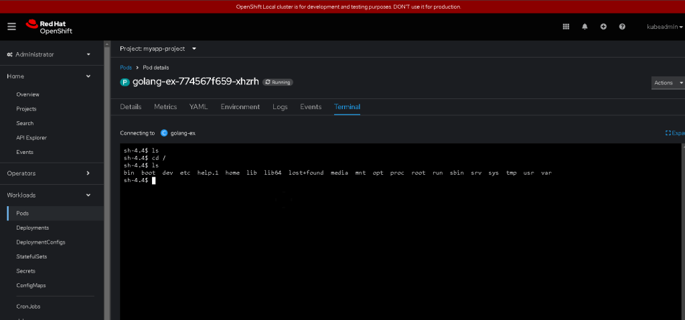
Deployed via > https://github.com/rifaterdemsahin/openshift-basic-app-deploy
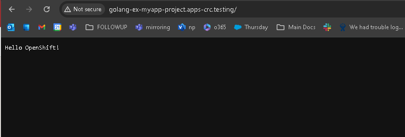
Starting point >
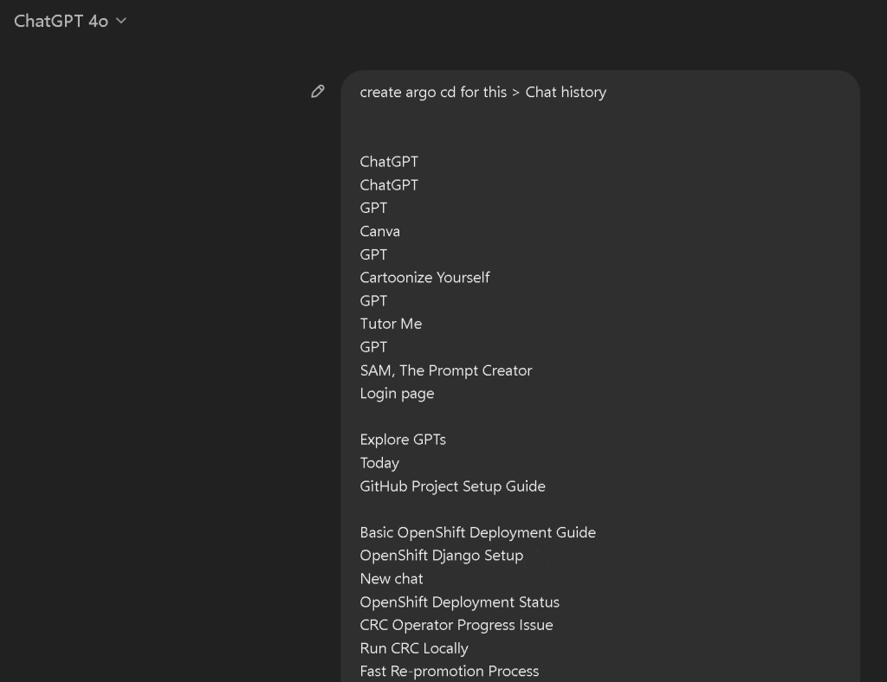
Start where you are !
resend if the context is too big
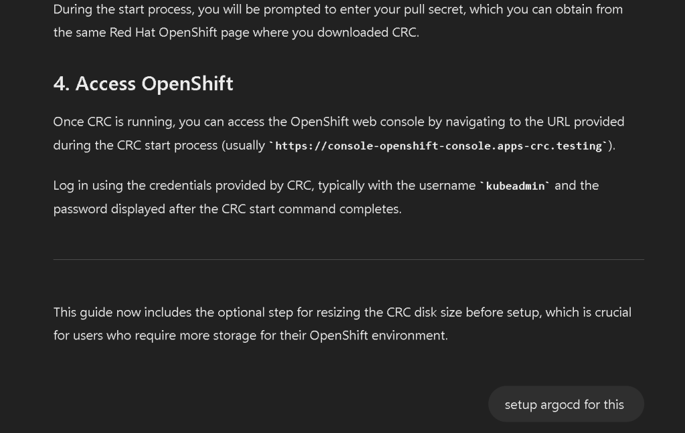
To set up Argo CD for managing the deployment of your applications on OpenShift using the steps you've provided, follow these instructions:
Step 1: Install Argo CD on OpenShift✅
- Create a new project/namespace for Argo CD:
oc new-project argocd
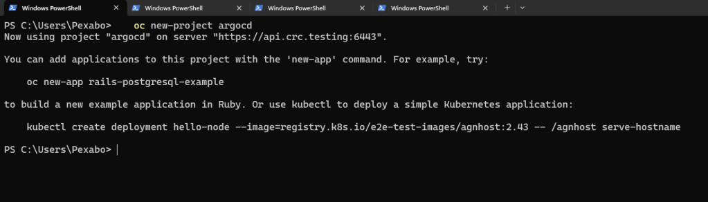
- Install Argo CD: You can install Argo CD on OpenShift using the following command, which deploys Argo CD and its components into the
argocdnamespace:
oc apply -n argocd -f https://raw.githubusercontent.com/argoproj/argo-cd/stable/manifests/install.yaml
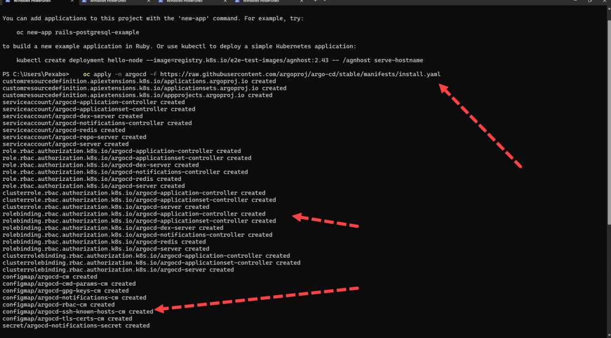
- Expose the Argo CD API Server: By default, the Argo CD API server is not exposed outside of the cluster. To access it externally, you need to create a route:
oc expose svc/argocd-server -n argocd --port=443 --target-port=8080 --name=argocd-server
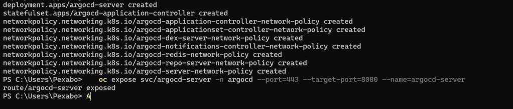
- Patch the Argo CD server for OpenShift OAuth: To use OpenShift's OAuth for authentication, patch the Argo CD server:
oc patch deployment argocd-server \
-n argocd \
-p '{"spec": {"template": {"spec": {"containers": [{"name": "argocd-server", "command": ["argocd-server", "--insecure", "--auth-mode", "server"]}]}}}}'
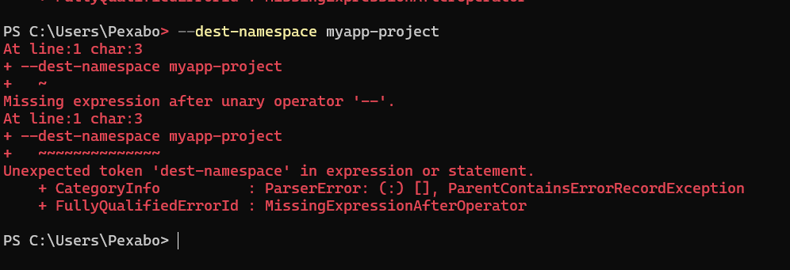
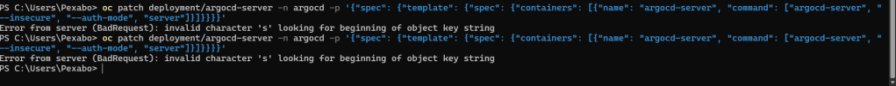
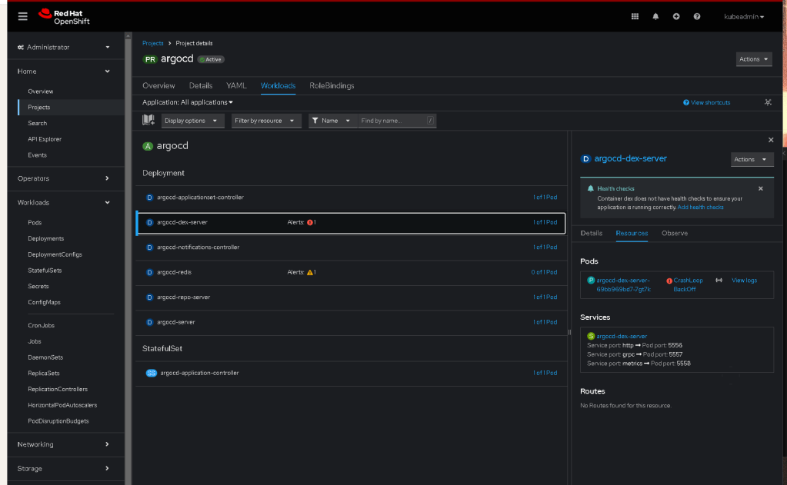
- Retrieve the initial admin password: The initial password for the
adminuser is stored in a Kubernetes secret. Retrieve it using:
oc get secret argocd-initial-admin-secret -n argocd -o jsonpath="{.data.password}" | base64 --decode; echo
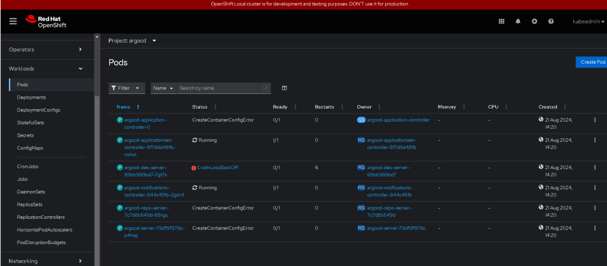
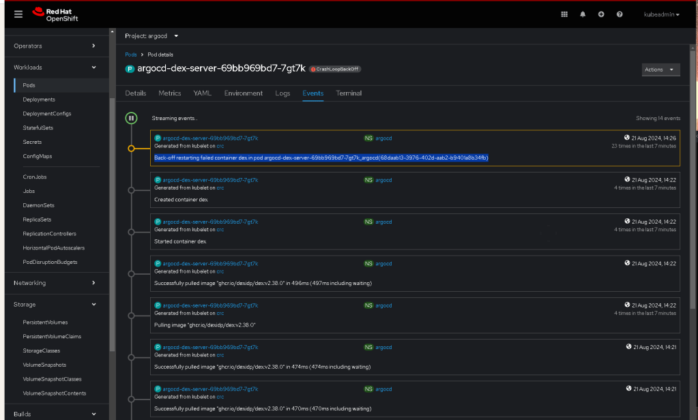
The "Back-off restarting failed container" error typically indicates that a container in a pod is repeatedly failing to start and Kubernetes is backing off from trying to restart it too frequently. In your case, this is happening with the dex container in the argocd-dex-server pod.
To troubleshoot and resolve this issue, follow these steps:
Step 1: Check Pod Logs
The first step is to check the logs of the failing container to understand why it is failing.
- Get the logs from the failing
dexcontainer:
oc logs pod/argocd-dex-server-69bb969bd7-7gt7k -c dex -n argocd
This command will show you the logs of the dex container. Look for any error messages or issues that might explain why the container is failing.
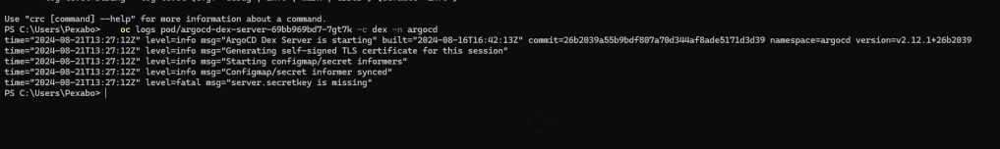
Step 2: Describe the Pod
Describing the pod can provide additional information, such as events that might be affecting the container.
- Describe the pod:
oc describe pod argocd-dex-server-69bb969bd7-7gt7k -n argocd
Review the output, particularly under the "Events" section, to see if there are any Kubernetes events that indicate why the container is failing to start.
Step 3: Review Dex Configuration
The dex container is part of the Argo CD's identity management system and is responsible for handling authentication requests. Issues with the configuration, such as incorrect OAuth settings or problems with connecting to an external identity provider, can cause the dex container to fail.
- Check the Dex configuration: If the logs indicate configuration issues, verify the Dex configuration stored in the
argocd-cmConfigMap:
oc get configmap argocd-cm -n argocd -o yaml
Look for the dex.config section and ensure that all the settings, such as OAuth2 client IDs, secrets, and connectors, are correctly configured.
Step 4: Check Resource Limits
Sometimes, containers fail because they do not have enough resources (CPU, memory) allocated.
- Check the resource requests and limits: Ensure that the
dexcontainer has sufficient CPU and memory resources allocated. You can do this by checking the pod definition:
oc get pod argocd-dex-server-69bb969bd7-7gt7k -n argocd -o yaml
Look for the resources section under the dex container and adjust if necessary.
Step 5: Restart the Pod
If the issue seems to be transient or due to a temporary misconfiguration, try restarting the pod to see if the issue resolves itself.
- Delete the failing pod to force a restart:
oc delete pod argocd-dex-server-69bb969bd7-7gt7k -n argocd
Kubernetes will automatically create a new pod to replace the one you deleted. Monitor the new pod to see if the dex container starts successfully.
Step 6: Upgrade Argo CD (If Necessary)
If the issue persists and is not related to configuration or resource limits, it might be due to a bug in the specific version of Argo CD you are using. Consider upgrading Argo CD to the latest stable version:
- Upgrade Argo CD: Follow the upgrade instructions from the Argo CD documentation.
Step 7: Additional Debugging
If all else fails, you might need to delve deeper into Kubernetes and Argo CD diagnostics:
-
Check the Kubernetes cluster health to ensure there are no underlying issues affecting the cluster.
-
Examine network policies or other security settings that might be preventing the
dexcontainer from functioning properly.
By following these steps, you should be able to identify and resolve the issue with the dex container in the Argo CD pod.
Step 2: Access the Argo CD UI
- Access the Argo CD UI: Open a web browser and navigate to the route created for the Argo CD server. You can find the route with:
oc get route argocd-server -n argocd
The route URL will look something like https://argocd-server-<project>.<cluster-domain>.
-
Login to Argo CD:
-
Username:
admin -
Password: Use the password retrieved in the previous step.
Step 3: Configure Argo CD to Manage Your Applications
- Add a Git Repository: Add the Git repository that contains your application manifests or Helm charts. This repository should include the necessary configurations for your OpenShift applications.
argocd repo add https://github.com/your-username/openshift-basic-app-deploy.git --username
- Create an Argo CD Application: Create an Argo CD Application that will track and manage the deployment of your OpenShift applications:
argocd app create myapp \
--repo https://github.com/your-username/openshift-basic-app-deploy.git \
--path
--dest-server https://kubernetes.default.svc \
--dest-namespace myapp-project
Replace <path-to-k8s-manifests-or-helm-chart> with the correct path in your Git repository where the Kubernetes manifests or Helm chart are stored.
- Synchronize the Application: Sync the application to deploy the resources defined in your Git repository:
argocd app sync myapp
This will deploy your applications to OpenShift according to the configurations in your Git repository.
Step 4: Monitor and Manage Deployments
-
Monitor Application Status: You can monitor the status of your deployments via the Argo CD UI. It will show you whether your applications are in sync with the Git repository.
-
Make Changes via GitOps: To update your application, make changes in your Git repository. Argo CD will detect these changes and sync them to your OpenShift cluster.
Step 5: Clean Up (Optional)
If you need to remove the Argo CD setup:
- Delete the Argo CD project:
oc delete project argocd
This setup allows you to manage your OpenShift application deployments using Argo CD with a GitOps approach. Argo CD will continuously monitor your Git repository and ensure that the state of your OpenShift cluster matches the desired state defined in your Git repository.
The error message server.secretkey is missing indicates that the dex container is failing to start because it requires a server.secretkey configuration that is currently missing. This secretkey is essential for the security of the Dex server, as it is used to sign tokens and ensure the integrity of communications.
Steps to Resolve the Issue:
Step 1: Check the Argo CD ConfigMap
The server.secretkey should be specified in the Argo CD argocd-cm ConfigMap. This ConfigMap contains the configuration for the Dex server.
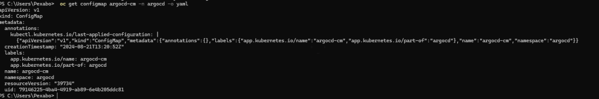
- Inspect the Argo CD ConfigMap:
oc get configmap argocd-cm -n argocd -o yaml
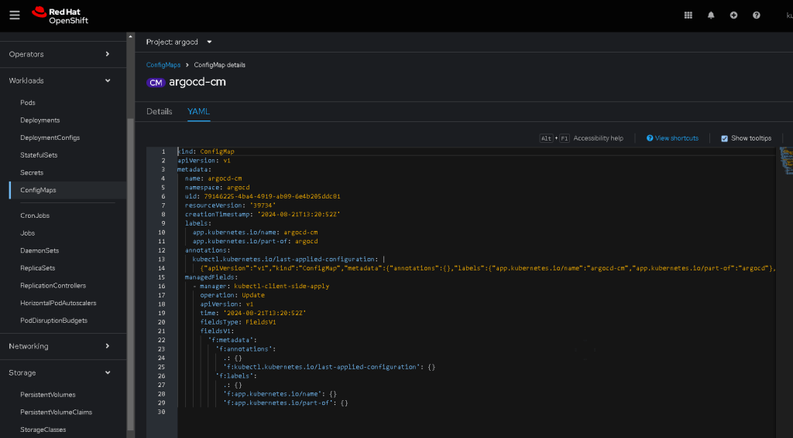
-
Look for the
dex.configsection: -
The
dex.configsection should contain aserver.secretkey. If this key is missing, it needs to be added. Exampledex.configsnippet withserver.secretkey:
dex.config: |
issuer: https://argocd.example.com/api/dex
storage:
type: kubernetes
config:
inCluster: true
web:
http: 0.0.0.0:5556
oauth2:
skipApprovalScreen: true
responseTypes: ["code", "token", "id_token"]
staticClients:
- id: argo-cd
redirectURIs:
- 'https://argocd.example.com/auth/callback'
name: Argo CD
secret:
server:
secretKey:
- Replace
<your-secret-key>with a securely generated key. This can be any random string but should be kept secret.
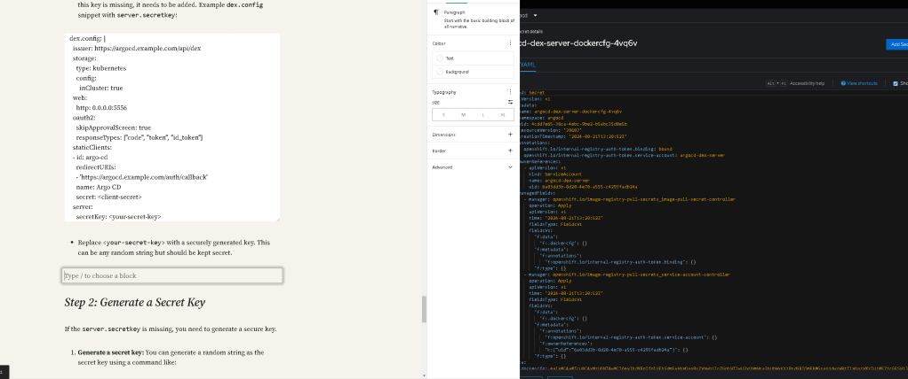
Step 2: Generate a Secret Key
If the server.secretkey is missing, you need to generate a secure key.
- Generate a secret key: You can generate a random string as the secret key using a command like:
openssl rand -hex 32
Copy the generated key and use it in the server.secretkey configuration.
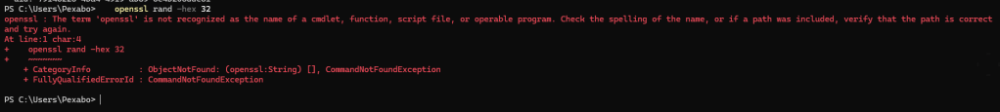
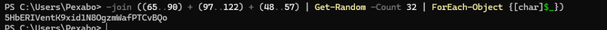
Step 3: Update the ConfigMap
If the server.secretkey is missing, update the argocd-cm ConfigMap.
- Edit the ConfigMap:
oc edit configmap argocd-cm -n argocd
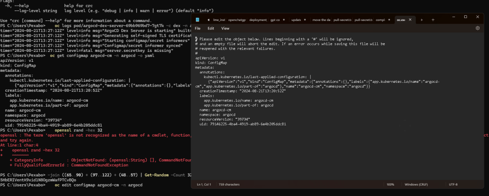
- Add or update the
server.secretkey: Add theserver.secretkeyunder thedex.configsection as shown in the example above.
Step 4: Restart the Dex Pod
After updating the ConfigMap, restart the Dex server pod to apply the changes.
- Delete the Dex server pod to force a restart:
oc delete pod argocd-dex-server-69bb969bd7-7gt7k -n argocd
Kubernetes will automatically create a new pod with the updated configuration.
Step 5: Verify the Dex Server
Once the Dex server pod restarts, check the logs again to ensure it starts successfully without errors.
- Check the pod logs:
oc logs pod/argocd-dex-server-69bb969bd7-
If the dex container starts without errors, the issue should be resolved, and Argo CD should function correctly.
Additional Considerations
-
Ensure that any changes to the ConfigMap are carefully reviewed to avoid introducing other configuration errors.
-
It is recommended to store the
server.secretkeyand other sensitive information securely, possibly in a Kubernetes Secret rather than directly in a ConfigMap, depending on your security requirements.
It seems that the openssl command is not available on your system. If you're using Windows and don't have OpenSSL installed, you can generate a random secret key using PowerShell or other methods. Here's how you can do it in PowerShell:
Step 1: Generate a Random Secret Key Using PowerShell
You can use the following PowerShell command to generate a random 32-byte (256-bit) hexadecimal string:
-join ((65..90) + (97..122) + (48..57) | Get-Random -Count 32 | ForEach-Object {[char]$_})
This command will produce a string of random alphanumeric characters. You can use this string as your server.secretkey.
Step 2: Use the Generated Key
Once you have the generated key, you can follow the steps to update the argocd-cm ConfigMap:
- Edit the ConfigMap:
oc edit configmap argocd-cm -n argocd
- Add or update the
server.secretkeyin thedex.configsection:
dex.config: |
...
server:
secretKey:
Replace <your-generated-secret-key> with the string you generated using PowerShell.
Step 3: Restart the Dex Pod
After updating the ConfigMap, delete the Dex server pod to apply the changes:
oc delete pod argocd-dex-server-69bb969bd7-7gt7k -n argocd
This should resolve the issue and allow the Dex container to start properly.
To update the ConfigMap by adding the server.secretkey under the dex.config section, you would edit the ConfigMap as follows:
apiVersion: v1
kind: ConfigMap
metadata:
annotations:
kubectl.kubernetes.io/last-applied-configuration: |
creationTimestamp: "2024-08-21T13:20:52Z"
labels:
app.kubernetes.io/name: argocd-cm
app.kubernetes.io/part-of: argocd
name: argocd-cm
namespace: argocd
resourceVersion: "39734"
uid: 79146225-4ba4-4919-ab89-6e4b205ddc81
data:
dex.config: |
connectors:
- type: github
id: github
name: GitHub
config:
clientID: $dex.github.clientID
clientSecret: $dex.github.clientSecret
server.secretkey: 5HbERIVentK9xid1N8OgzmWafPTCvBQo
Key Points:
-
The
server.secretkeywas added to thedex.configsection. -
Ensure the indentation is correct, as YAML is indentation-sensitive.
-
The
server.secretkeyvalue is placed under the maindex.configsection.
This YAML snippet should be included in the ConfigMap, and after saving, it should apply the necessary configuration.
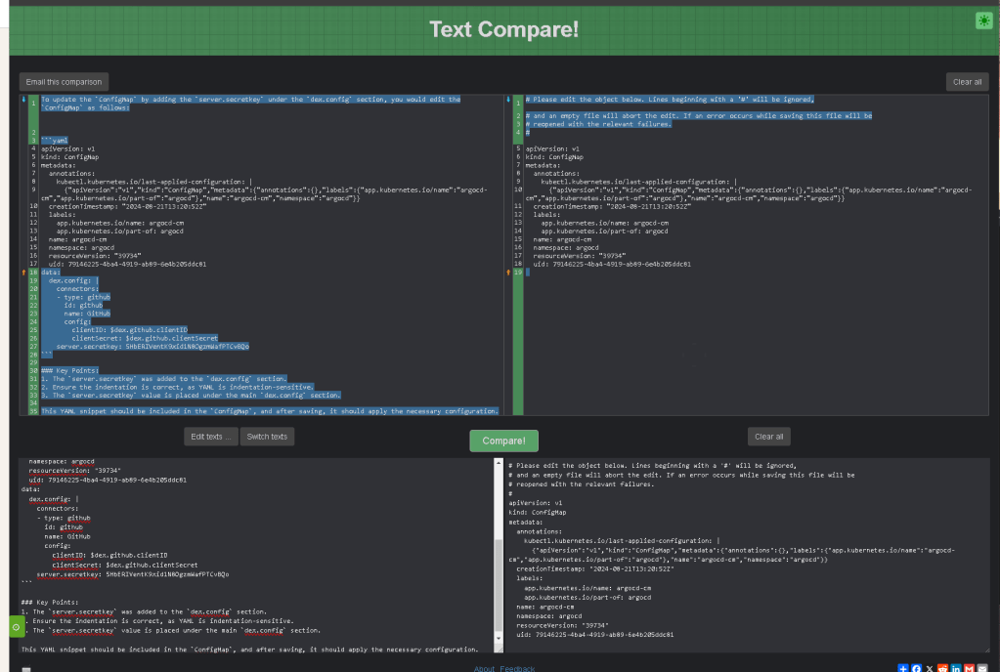
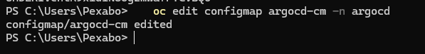
config map opened in notepad and gpt added the part that was needed
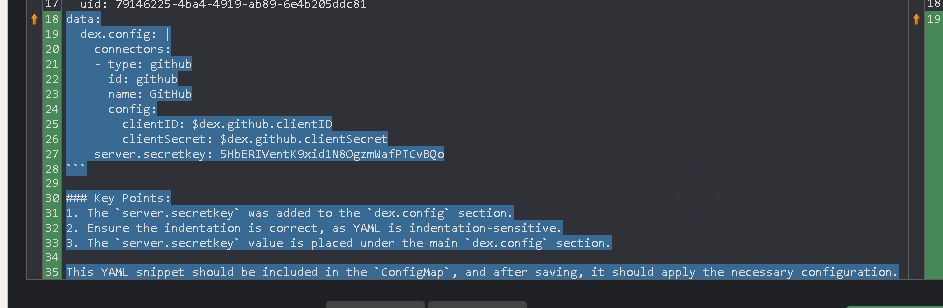
Deleted the pod
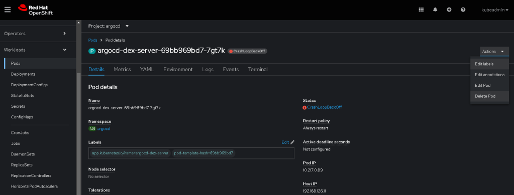
still loupe back
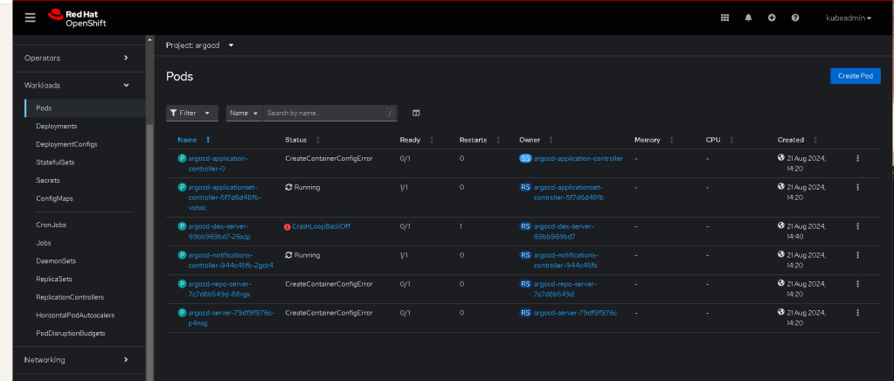
still the configmap updated it did not collect it
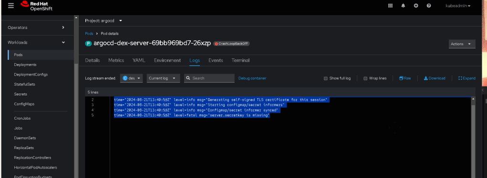
the data is there
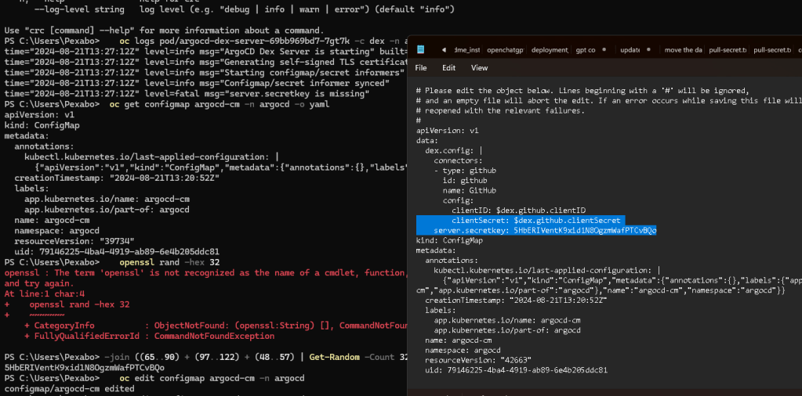
restart rollout
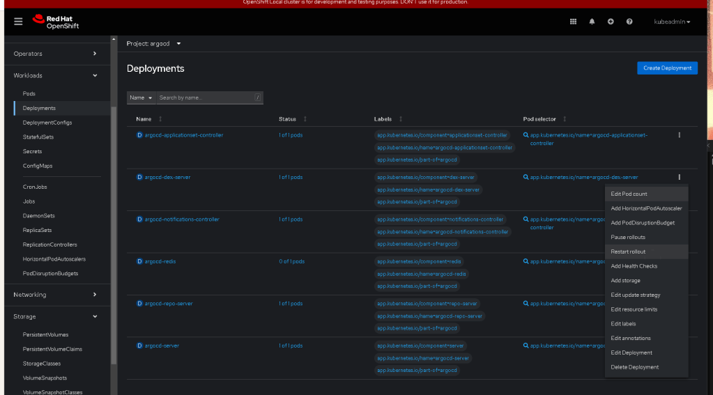
Delete the pod >>> it is back online back crashing
apiVersion: v1
kind: ConfigMap
metadata:
annotations:
kubectl.kubernetes.io/last-applied-configuration: |
creationTimestamp: "2024-08-21T13:20:52Z"
labels:
app.kubernetes.io/name: argocd-cm
app.kubernetes.io/part-of: argocd
name: argocd-cm
namespace: argocd
resourceVersion: "39734"
uid: 79146225-4ba4-4919-ab89-6e4b205ddc81
data:
dex.config: |
connectors:
- type: github
id: github
name: GitHub
config:
clientID: $dex.github.clientID
clientSecret: $dex.github.clientSecret
server.secretkey: 5HbERIVentK9xid1N8OgzmWafPTCvBQo
IS THE CONNECTOR THE ISSUE OR THE SERVER SECRET KEY ?
It looks like there are some log messages that have been mistakenly included in the metadata section of the ConfigMap. I'll clean up the object for you, removing the unintended log lines. Here's the edited ConfigMap:
apiVersion: v1
data:
dex.config: |
connectors:
- type: github
id: github
name: GitHub
config:
clientID: $dex.github.clientID
clientSecret: $dex.github.clientSecret
server.secretkey: 5HbERIVentK9xid1N8OgzmWafPTCvBQo
kind: ConfigMap
metadata:
annotations:
kubectl.kubernetes.io/last-applied-configuration: |
creationTimestamp: "2024-08-21T13:20:52Z"
labels:
app.kubernetes.io/name: argocd-cm
app.kubernetes.io/part-of: argocd
name: argocd-cm
namespace: argocd
resourceVersion: "42663"
uid: 79146225-4ba4-4919-ab89-6e4b205ddc81
This should resolve any issues with unintended content in the metadata section.
It seems that the edit command you're using in the OpenShift CLI (oc edit configmap argocd-cm -n argocd) is not saving the changes you are trying to make. This could be due to several reasons, such as the editing process not detecting any changes, or there might be an issue with the text editor being used.
Here are a few steps you can try to resolve this:
1. Ensure Changes Are Made:
Make sure you are making changes within the file after opening it with the oc edit command. If no actual edits are made, the operation might cancel automatically.
2. Force the Editor to Save Changes:
When in the editor, you can force a save even if the changes seem minor. For example, add a comment or make a trivial change and then save the file.
3. Use a Different Editor:
If the editor associated with oc edit is not working properly, you can set a different one. For example:
export KUBE_EDITOR="nano"
oc edit configmap argocd-cm -n argocd
Replace "nano" with your preferred text editor (e.g., "vi", "vim", "code").
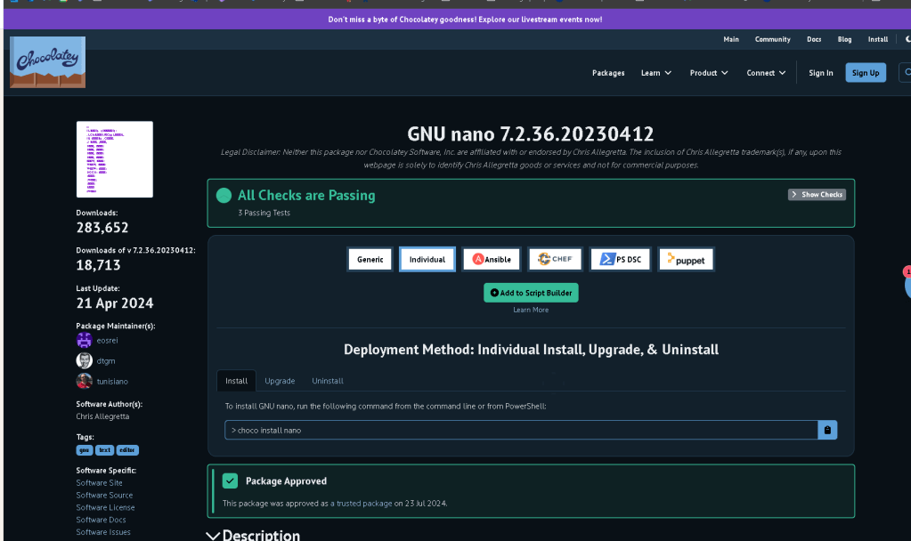
4. Manually Apply Changes:
If editing directly is still problematic, consider exporting the current config, manually editing it in your preferred editor, and then reapplying it:
oc get configmap argocd-cm -n argocd -o yaml > argocd-cm.yaml
Edit the argocd-cm.yaml file, then apply the changes:
oc apply -f argocd-cm.yaml
5. Use oc patch:
If the change is small, you can also use oc patch to update specific fields in the ConfigMap:
oc patch configmap argocd-cm -n argocd --patch '{"data":{"server.secretkey":"newSecretKey"}}'
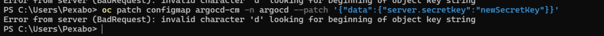
If you follow these steps, you should be able to apply your changes successfully. If the issue persists, it might be a good idea to investigate any potential permissions issues or conflicts with the OpenShift cluster.
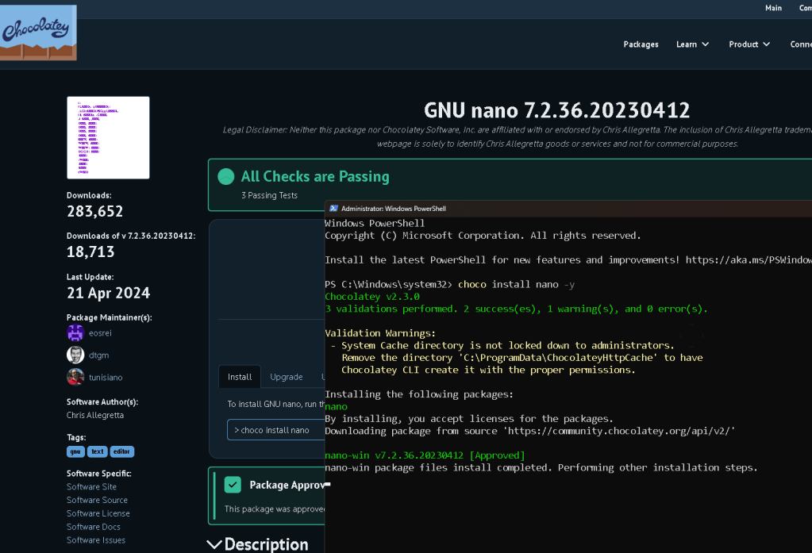
The export command is typically used in Unix-like systems (e.g., Linux or macOS), so it won’t work in a Windows command prompt or PowerShell. Here’s how you can set the editor for oc edit in Windows:
1. Setting the Editor in PowerShell
If you are using PowerShell, you can set the KUBE_EDITOR environment variable by using:
$env:KUBE_EDITOR="nano"
oc edit configmap argocd-cm -n argocd
You can replace "notepad" with any other text editor available on your system, like "notepad++", "code" for Visual Studio Code, or any other editor installed on your system.
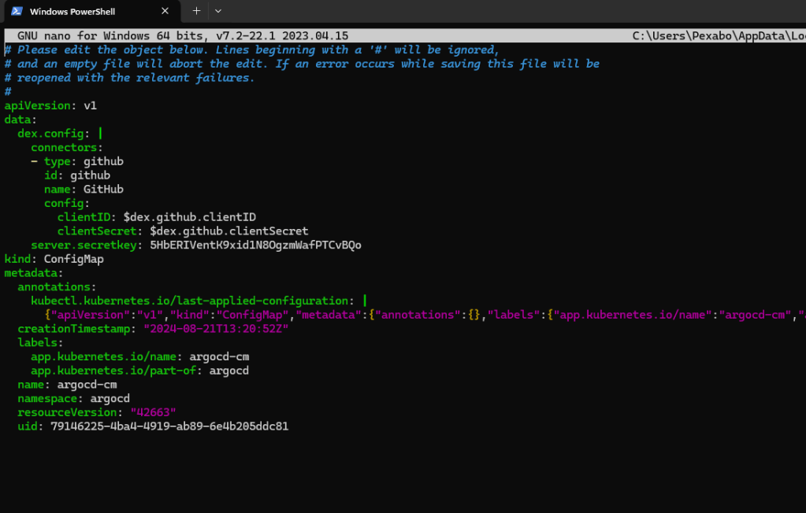
2. Setting the Editor in Command Prompt
If you are using the Windows command prompt (cmd.exe), you can set the KUBE_EDITOR environment variable like this:
set KUBE_EDITOR=notepad
oc edit configmap argocd-cm -n argocd
Again, replace "notepad" with the editor of your choice.
3. Editing the ConfigMap Directly
If the oc edit command is still not working as expected, you might want to manually edit the ConfigMap as described earlier:
- Export the ConfigMap:
oc get configmap argocd-cm -n argocd -o yaml > argocd-cm.yaml
- Edit the YAML file using Notepad or any other editor:
notepad argocd-cm.yaml
- Apply the changes:
oc apply -f argocd-cm.yaml
This process should allow you to modify the ConfigMap successfully on a Windows machine.
Changes not getting saved running app maybe the case
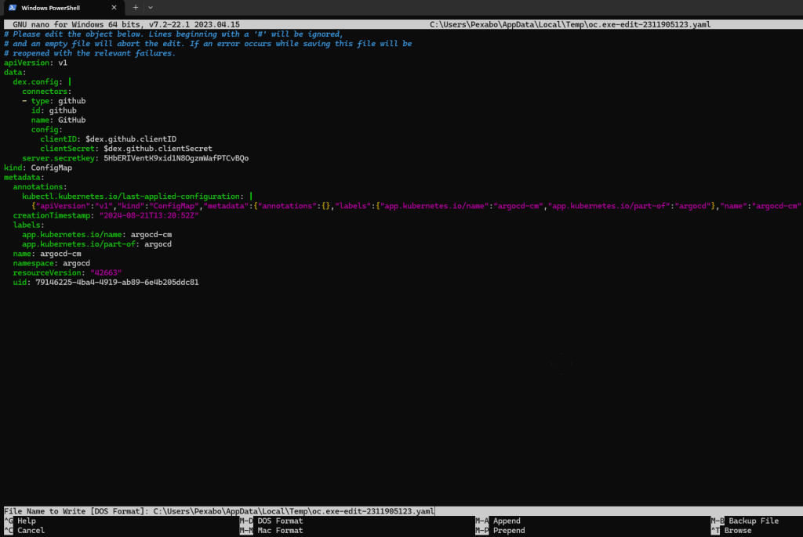
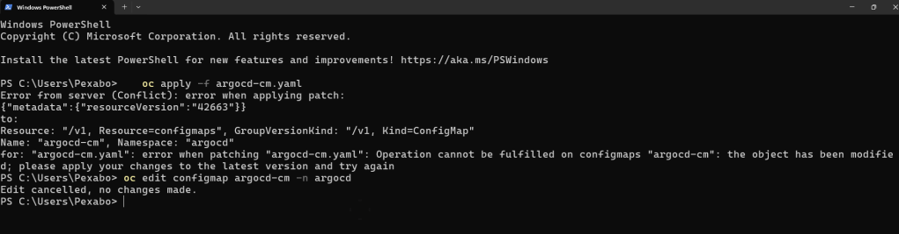
The error message you're encountering occurs when you try to apply a patch to a Kubernetes resource, but the resource has been modified since you last retrieved it. This can happen when multiple processes or users are modifying the same resource, or if the resource was changed automatically by some other system process.
Here’s how you can resolve this issue:
- Retrieve the Latest Version:
Since the resource has been modified, you need to get the latest version of it. You can do this by usingkubectl get configmap(oroc get configmapin OpenShift) to retrieve the current state of the ConfigMap.
oc get configmap argocd-cm -n argocd -o yaml > latest-argocd-cm.yaml
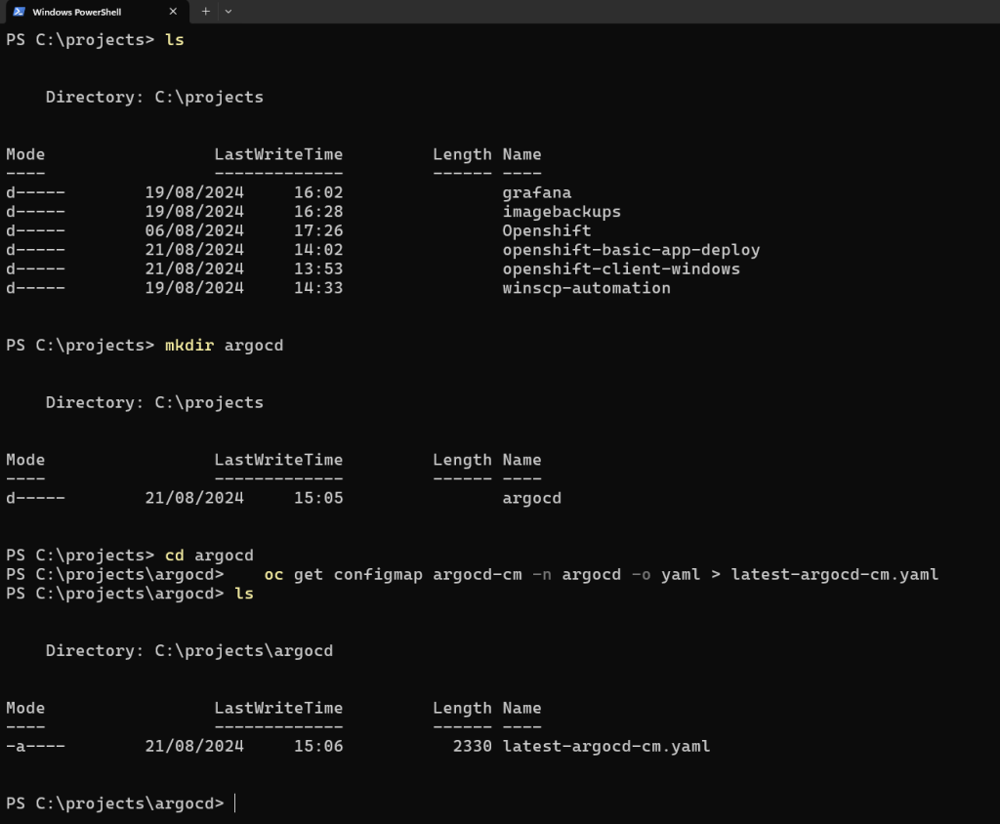
- Apply Your Changes to the Latest Version:
Edit thelatest-argocd-cm.yamlfile to include your changes. You can manually apply your changes to this file or use a text editor to update it.
vi latest-argocd-cm.yaml
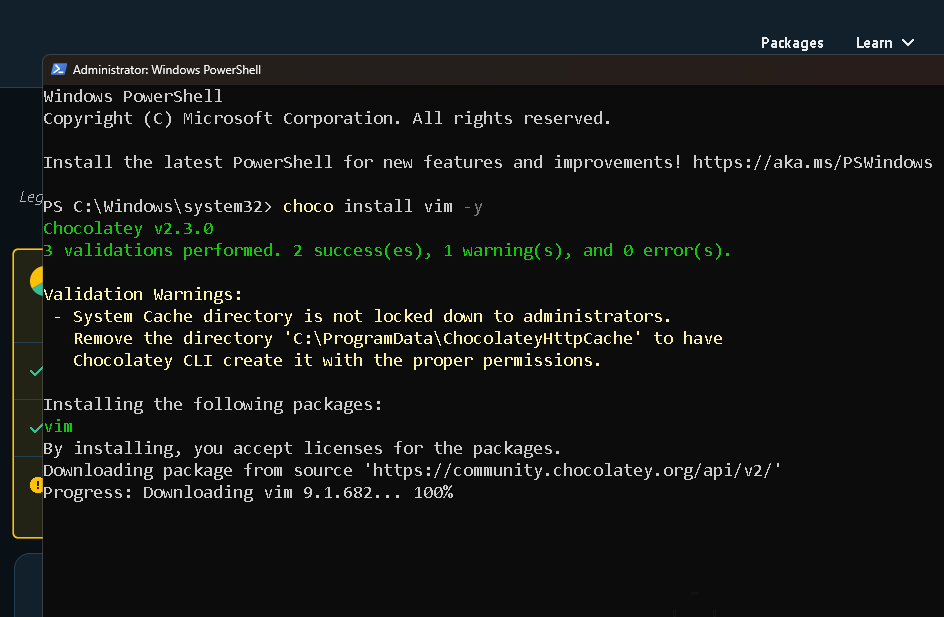
- Apply the Updated ConfigMap:
After making your changes, apply the updated ConfigMap back to the cluster.
oc apply -f latest-argocd-cm.yaml
-
Use
kubectl edit/oc editfor Simpler Edits:
If you only need to make a small change, you can use theoc editcommand. This command will allow you to edit the resource in place. However, since you already tried this and it failed, the above steps to retrieve and apply the latest version should resolve the conflict. -
Force Apply (Caution):
If you're confident that the changes in yourargocd-cm.yamlshould override the current state, you can use the--forceflag to delete and recreate the resource. This is a destructive operation and should be used with caution.
oc replace --force -f argocd-cm.yaml
Using these steps, you should be able to resolve the conflict and successfully apply your changes.
to copy in Vim
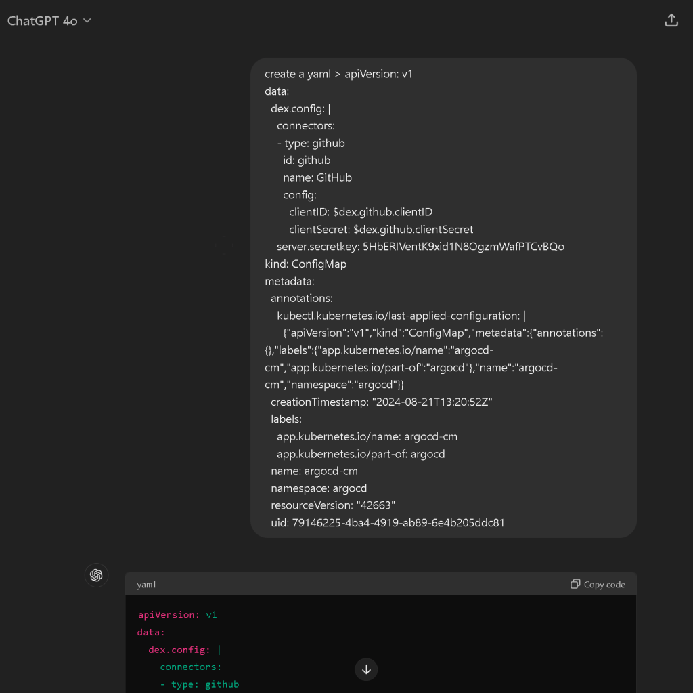
paste issue notepad push
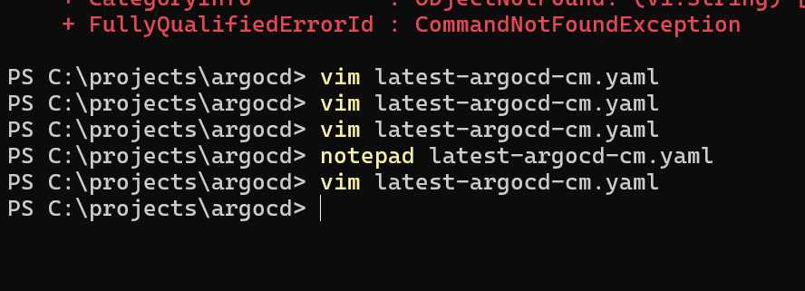
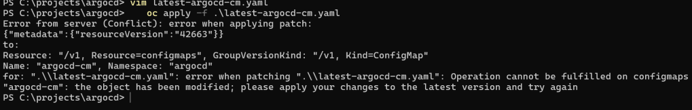
it has the secret
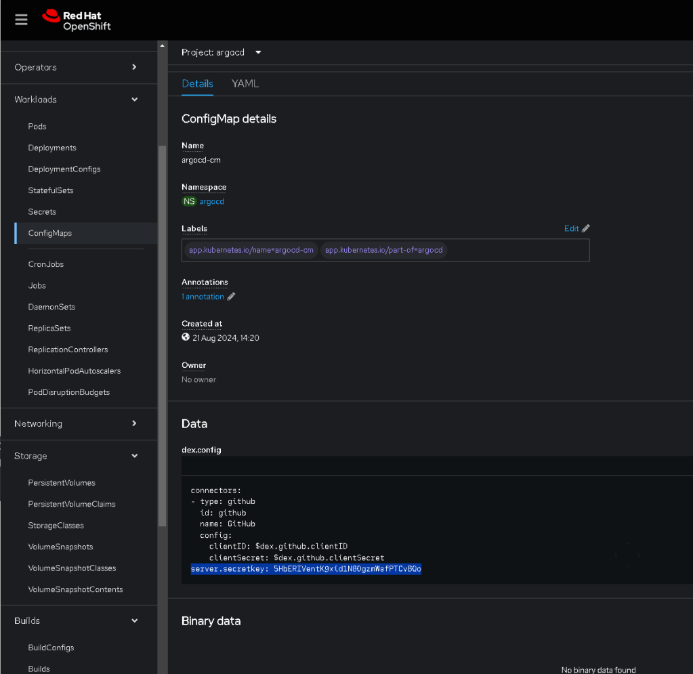
update in portal
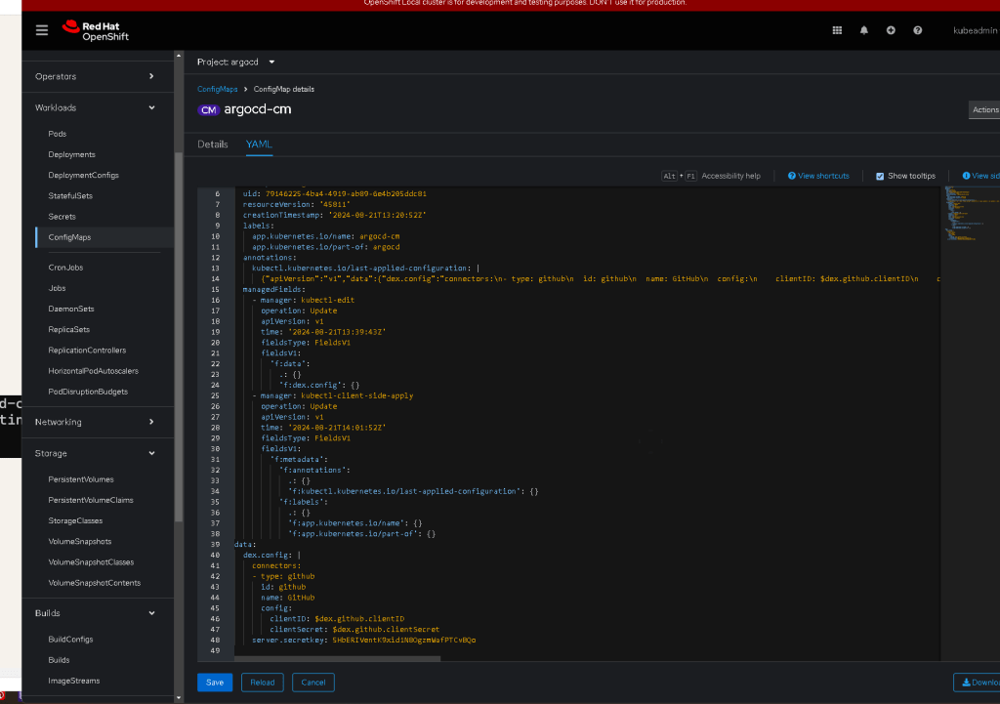
saved one
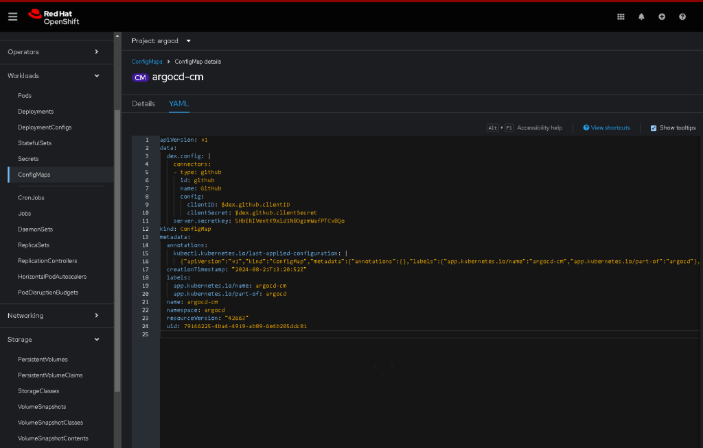
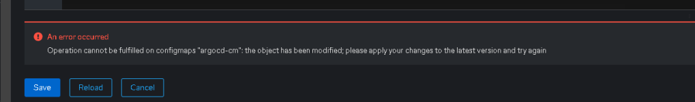
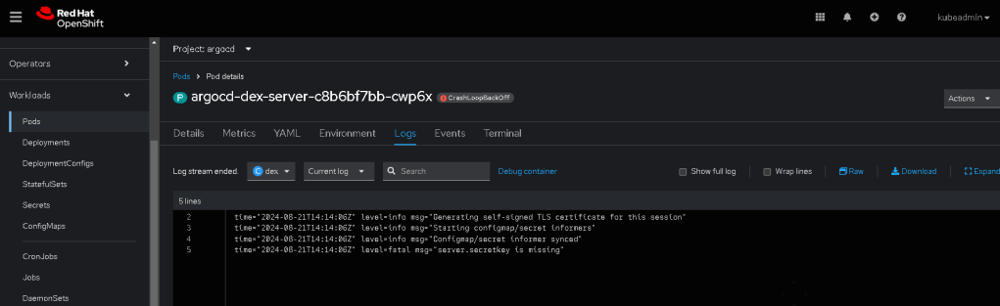
Delete and restart > with the secret inplace
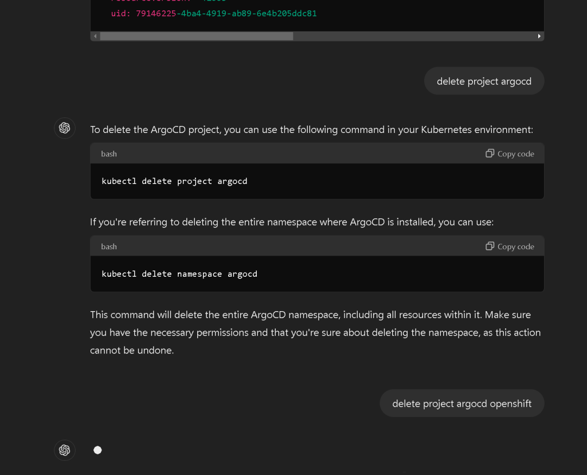
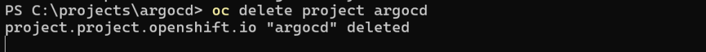
New prompt > recreate argocd with the secret server.secretkey: 5HbERIVentK9xid1N8OgzmWafPTCvBQo
To recreate the ArgoCD project in OpenShift with the specified secret key, you can follow these steps:
1. Create the argocd Project (Namespace)
First, recreate the argocd project (namespace):✅
oc new-project argocd
2. Create a Secret with the Server Secret Key
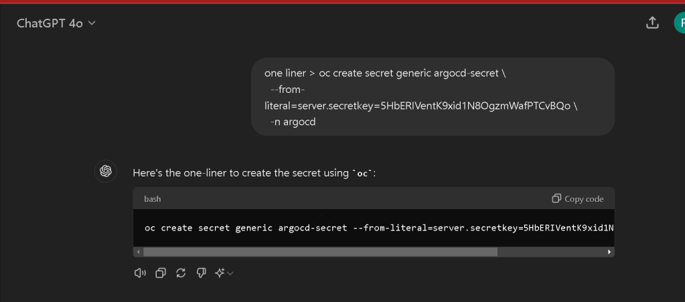
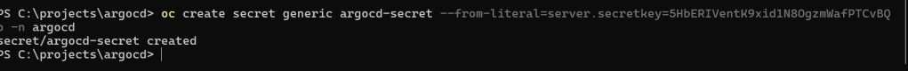
Create a Kubernetes Secret in the argocd namespace with the provided server.secretkey:
oc create secret generic argocd-secret \
--from-literal=server.secretkey=5HbERIVentK9xid1N8OgzmWafPTCvBQo \
-n argocd
3. Install ArgoCD into the argocd Namespace
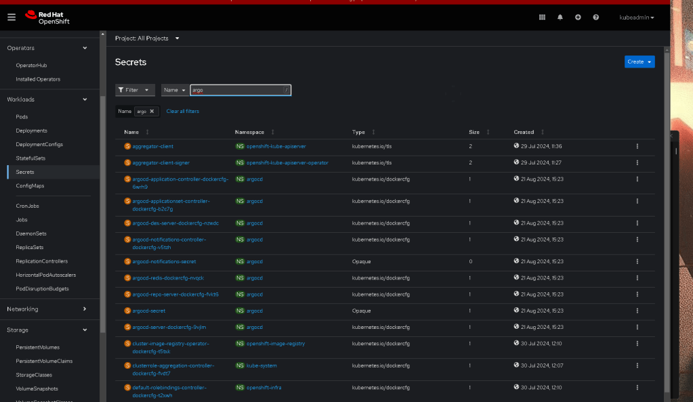
You can then install ArgoCD into this namespace. If you have a manifest or a Helm chart, you can apply it directly. Here’s an example using the official ArgoCD installation manifest:
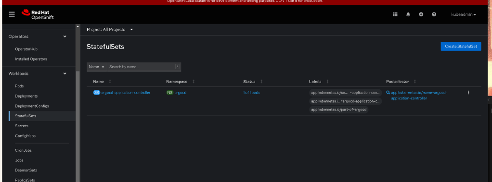
oc apply -n argocd -f https://raw.githubusercontent.com/argoproj/argo-cd/stable/manifests/install.yaml
4. Verify the Installation
Once the installation is complete, ensure all the pods are running in the argocd namespace:
oc get pods -n argocd
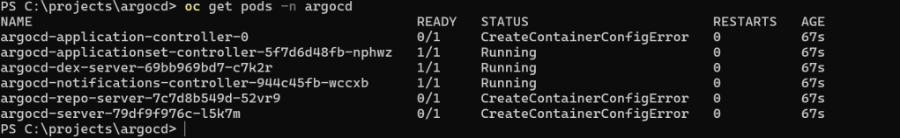
5. Configure ArgoCD to Use the Secret Key
If you need to ensure ArgoCD uses the secret key provided, you can modify the argocd-cm ConfigMap or confirm that the installation process picked up the secret correctly.
oc edit configmap argocd-cm -n argocd
Ensure that the server.secretkey in the argocd-cm matches the key you've provided:
data:
dex.config: |
connectors:
- type: github
id: github
name: GitHub
config:
clientID: $dex.github.clientID
clientSecret: $dex.github.clientSecret
server.secretkey: 5HbERIVentK9xid1N8OgzmWafPTCvBQo
After these steps, your ArgoCD should be running with the specified secret key in your OpenShift cluster.
Error: secret "argocd-redis" not found
The error secret "argocd-redis" not found suggests that the ArgoCD installation is expecting a secret for Redis, but it hasn't been created. This secret is usually automatically created during the installation of ArgoCD, but it might be missing or was deleted.
To resolve this issue, follow these steps:
1. Recreate the Missing Secret
If the secret was accidentally deleted or not created, you can recreate it. Here’s how to manually create a basic Redis secret:
oc create secret generic argocd-redis \
--from-literal=password=$(openssl rand -base64 16) \
-n argocd
This command generates a random password and stores it in the argocd-redis secret under the key password.
2. Reinstall or Reapply the ArgoCD Installation Manifests
If recreating the secret manually doesn't solve the problem, you might need to reapply the ArgoCD installation manifests. This process should recreate all necessary secrets, including argocd-redis.
oc apply -n argocd -f https://raw.githubusercontent.com/argoproj/argo-cd/stable/manifests/install.yaml
3. Verify the Installation
After creating the secret or reinstalling, check the status of the ArgoCD components:
oc get pods -n argocd
Ensure all pods are running, particularly those associated with Redis (e.g., argocd-redis).
4. Access the ArgoCD UI Again
Once the secret is in place and the pods are running, you can retry accessing the ArgoCD UI by following the previous steps to forward the port and log in.
If you encounter any further issues, please provide the error details, and I can assist you further.
secret/argocd-redis created
PS C:\projects\argocd> -join ((65..90) + (97..122) + (48..57) | Get-Random -Count 32 | ForEach-Object {[char]$_})
50kQ9NTyhVazFoLtbAsfiYrpGwl8BjxC
recreate and add this at start
argocd-redis 50kQ9NTyhVazFoLtbAsfiYrpGwl8BjxC
Redo
Setting up ArgoCD on CodeReady Containers (CRC), which is Red Hat's local OpenShift environment, involves several steps. CRC provides a full OpenShift cluster on your local machine, which is ideal for development and testing. Here's how you can set up ArgoCD on CRC:
Prerequisites
-
CRC installed and running on your local machine.
-
occommand-line tool configured to interact with your CRC instance.
Steps to Set Up ArgoCD on CRC
1. Start CRC and Log In
Ensure CRC is running and that you are logged into the OpenShift cluster:
crc start
oc login -u developer -p developer https://api.crc.testing:6443
2. Create a New Project for ArgoCD
Create a new project (namespace) for ArgoCD:
oc new-project argocd
3. Install ArgoCD
Apply the ArgoCD installation manifests to deploy ArgoCD into the argocd namespace:
oc apply -n argocd -f https://raw.githubusercontent.com/argoproj/argo-cd/stable/manifests/install.yaml
This command installs all necessary ArgoCD components, including the server, application controller, Redis, and others.
4. Create the Required Secrets
You need to create the argocd-secret secret with the server secret key and Redis password:
oc create secret generic argocd-secret \
--from-literal=server.secretkey=5HbERIVentK9xid1N8OgzmWafPTCvBQo \
--from-literal=redis.password=50kQ9NTyhVazFoLtbAsfiYrpGwl8BjxC \
-n argocd
5. Expose the ArgoCD Server
Since CRC is a local environment, the easiest way to access the ArgoCD UI is through port forwarding or by creating an OpenShift route.
Option 1: Port Forwarding
Port forward the ArgoCD server service to your local machine:
oc port-forward svc/argocd-server -n argocd 8080:443
Access ArgoCD UI at https://localhost:8080.
Option 2: Expose ArgoCD via a Route
Expose the ArgoCD server via a route:
oc expose svc/argocd-server -n argocd --port=443 --name=argocd-route
Get the route URL:
oc get route argocd-route -n argocd
Use the URL under HOST/PORT to access the ArgoCD UI in your browser.
6. Log In to ArgoCD
- Get the initial admin password:
oc get secret argocd-initial-admin-secret -n argocd -o jsonpath="{.data.password}" | base64 --decode
-
Log in to the ArgoCD UI:
-
Username:
admin -
Password: The output from the command above.
-
Change the default admin password: Once logged in, change the default admin password:
argocd account update-password
7. Verify the Installation
Ensure that all ArgoCD pods are running:
oc get pods -n argocd
Check the status of the ArgoCD components to make sure everything is up and running.
Summary
-
Start CRC and log in.
-
Create an
argocdproject. -
Install ArgoCD using the official manifests.
-
Create the required secrets (
argocd-secret). -
Expose the ArgoCD server (via port forwarding or a route).
-
Log in to the ArgoCD UI with the default credentials.
-
Change the default admin password and start managing applications.
This setup should give you a fully functional ArgoCD instance running in your CRC environment. You can now start using ArgoCD to manage your applications on your local OpenShift cluster.
To get the full URL of the route in OpenShift, you can use the following command:
oc get route argocd-route -n argocd -o jsonpath='{.spec.host}{"\n"}'
This command extracts the host part of the route, which represents the full URL of the argocd-route. If the route uses HTTPS, prepend https:// to the output; otherwise, prepend http://.
Here's how you could combine it into a full URL with the HTTPS protocol:
echo https://$(oc get route argocd-route -n argocd -o jsonpath='{.spec.host}')
This command will output the complete URL, assuming it's an HTTPS route. If it's HTTP, replace https:// with http://.
The CreateContainerConfigError typically occurs due to issues with the configuration, such as missing environment variables, secrets, or misconfigured volume mounts. To troubleshoot this, you'll want to examine the detailed configuration and logs of the affected pods.
Steps to Troubleshoot:
- Describe the Pod to Get More Details Run the following command to describe the pod and get more information about why the container is failing to start:
oc describe pod argocd-application-controller-0 -n argocd
Do the same for the other pods (argocd-repo-server and argocd-server):
oc describe pod argocd-repo-server-7c7d8b549d-fr2lq -n argocd
oc describe pod argocd-server-79df9f976c-5v4zx -n argocd
Look for sections that indicate failed mounts, missing environment variables, or failed secret access. Key areas to inspect are:
-
Events: This section at the bottom usually gives a summary of errors.
-
Volumes: Check if all volumes required by the pod are available and correctly mounted.
-
Environment Variables: Ensure all required environment variables are set and point to valid secrets or values.
-
Check the Logs of the Pod If the describe command doesn't provide enough information, check the logs for the failing pod:
oc logs argocd-application-controller-0 -n argocd
Repeat for the other pods:
oc logs argocd-repo-server-7c7d8b549d-fr2lq -n argocd
oc logs argocd-server-79df9f976c-5v4zx -n argocd
The logs will often contain error messages related to missing files, configuration issues, or permission problems.
-
Verify the Required Secrets and ConfigMaps Based on the common issues, check the required secrets or ConfigMaps:
-
List all secrets in the
argocdnamespace:oc get secrets -n argocd -
List all ConfigMaps in the
argocdnamespace:oc get configmaps -n argocdCompare these with what the pods are expecting (as shown in the describe command output). Ensure all expected secrets and ConfigMaps are present and correctly configured. -
Inspect Volumes and Volume Mounts If the error is related to volumes (e.g., missing mount points or incorrect paths), verify that the volumes are correctly defined in the pod specification. This can often be traced back to the ConfigMap or Secret configuration.
-
Recreate the Secret if Necessary If the issue is with the
argocd-secret, you can recreate it:
oc delete secret argocd-secret -n argocd
oc create secret generic argocd-secret \
--from-literal=server.secretkey=5HbERIVentK9xid1N8OgzmWafPTCvBQo \
--from-literal=redis.password=50kQ9NTyhVazFoLtbAsfiYrpGwl8BjxC \
-n argocd
- Restart the Pods After making any corrections (e.g., fixing secrets or ConfigMaps), restart the affected pods to apply the changes:
oc delete pod argocd-application-controller-0 -n argocd
oc delete pod argocd-repo-server-7c7d8b549d-fr2lq -n argocd
oc delete pod argocd-server-79df9f976c-5v4zx -n argocd
Conclusion
By following these steps, you should be able to identify the cause of the CreateContainerConfigError and resolve it. If the describe or log output reveals specific issues, feel free to share them, and I can provide more targeted guidance.
Name: argocd-application-controller-0
Namespace: argocd
Priority: 0
Service Account: argocd-application-controller
Node: crc/192.168.126.11
Start Time: Wed, 21 Aug 2024 15:37:31 +0100
Labels: app.kubernetes.io/name=argocd-application-controller
apps.kubernetes.io/pod-index=0
controller-revision-hash=argocd-application-controller-6d9cf868c6
statefulset.kubernetes.io/pod-name=argocd-application-controller-0
Annotations: k8s.ovn.org/pod-networks:
k8s.v1.cni.cncf.io/network-status:
[{
"name": "ovn-kubernetes",
"interface": "eth0",
"ips": [
"10.217.0.142"
],
"mac": "0a:58:0a:d9:00:8e",
"default": true,
"dns": {}
}]
openshift.io/scc: restricted-v2
seccomp.security.alpha.kubernetes.io/pod: runtime/default
Status: Pending
SeccompProfile: RuntimeDefault
IP: 10.217.0.142
IPs:
IP: 10.217.0.142
Controlled By: StatefulSet/argocd-application-controller
Containers:
argocd-application-controller:
Container ID:
Image: quay.io/argoproj/argocd:v2.12.1
Image ID:
Port: 8082/TCP
Host Port: 0/TCP
SeccompProfile: RuntimeDefault
Args:
/usr/local/bin/argocd-application-controller
State: Waiting
Reason: CreateContainerConfigError
Ready: False
Restart Count: 0
Readiness: http-get http://:8082/healthz delay=5s timeout=1s period=10s #success=1 #failure=3
Environment:
REDIS_PASSWORD: <set to the key 'auth' in secret 'argocd-redis'> Optional: false
ARGOCD_CONTROLLER_REPLICAS: 1
ARGOCD_RECONCILIATION_TIMEOUT: <set to the key 'timeout.reconciliation' of config map 'argocd-cm'> Optional: true
ARGOCD_HARD_RECONCILIATION_TIMEOUT: <set to the key 'timeout.hard.reconciliation' of config map 'argocd-cm'> Optional: true
ARGOCD_RECONCILIATION_JITTER: <set to the key 'timeout.reconciliation.jitter' of config map 'argocd-cm'> Optional: true
ARGOCD_REPO_ERROR_GRACE_PERIOD_SECONDS: <set to the key 'controller.repo.error.grace.period.seconds' of config map 'argocd-cmd-params-cm'> Optional: true
ARGOCD_APPLICATION_CONTROLLER_REPO_SERVER: <set to the key 'repo.server' of config map 'argocd-cmd-params-cm'> Optional: true
ARGOCD_APPLICATION_CONTROLLER_REPO_SERVER_TIMEOUT_SECONDS: <set to the key 'controller.repo.server.timeout.seconds' of config map 'argocd-cmd-params-cm'> Optional: true
ARGOCD_APPLICATION_CONTROLLER_STATUS_PROCESSORS: <set to the key 'controller.status.processors' of config map 'argocd-cmd-params-cm'> Optional: true
ARGOCD_APPLICATION_CONTROLLER_OPERATION_PROCESSORS: <set to the key 'controller.operation.processors' of config map 'argocd-cmd-params-cm'> Optional: true
ARGOCD_APPLICATION_CONTROLLER_LOGFORMAT: <set to the key 'controller.log.format' of config map 'argocd-cmd-params-cm'> Optional: true
ARGOCD_APPLICATION_CONTROLLER_LOGLEVEL: <set to the key 'controller.log.level' of config map 'argocd-cmd-params-cm'> Optional: true
ARGOCD_APPLICATION_CONTROLLER_METRICS_CACHE_EXPIRATION: <set to the key 'controller.metrics.cache.expiration' of config map 'argocd-cmd-params-cm'> Optional: true
ARGOCD_APPLICATION_CONTROLLER_SELF_HEAL_TIMEOUT_SECONDS: <set to the key 'controller.self.heal.timeout.seconds' of config map 'argocd-cmd-params-cm'> Optional: true
ARGOCD_APPLICATION_CONTROLLER_REPO_SERVER_PLAINTEXT: <set to the key 'controller.repo.server.plaintext' of config map 'argocd-cmd-params-cm'> Optional: true
ARGOCD_APPLICATION_CONTROLLER_REPO_SERVER_STRICT_TLS: <set to the key 'controller.repo.server.strict.tls' of config map 'argocd-cmd-params-cm'> Optional: true
ARGOCD_APPLICATION_CONTROLLER_PERSIST_RESOURCE_HEALTH: <set to the key 'controller.resource.health.persist' of config map 'argocd-cmd-params-cm'> Optional: true
ARGOCD_APP_STATE_CACHE_EXPIRATION: <set to the key 'controller.app.state.cache.expiration' of config map 'argocd-cmd-params-cm'> Optional: true
REDIS_SERVER: <set to the key 'redis.server' of config map 'argocd-cmd-params-cm'> Optional: true
REDIS_COMPRESSION: <set to the key 'redis.compression' of config map 'argocd-cmd-params-cm'> Optional: true
REDISDB: <set to the key 'redis.db' of config map 'argocd-cmd-params-cm'> Optional: true
ARGOCD_DEFAULT_CACHE_EXPIRATION: <set to the key 'controller.default.cache.expiration' of config map 'argocd-cmd-params-cm'> Optional: true
ARGOCD_APPLICATION_CONTROLLER_OTLP_ADDRESS: <set to the key 'otlp.address' of config map 'argocd-cmd-params-cm'> Optional: true
ARGOCD_APPLICATION_CONTROLLER_OTLP_INSECURE: <set to the key 'otlp.insecure' of config map 'argocd-cmd-params-cm'> Optional: true
ARGOCD_APPLICATION_CONTROLLER_OTLP_HEADERS: <set to the key 'otlp.headers' of config map 'argocd-cmd-params-cm'> Optional: true
ARGOCD_APPLICATION_NAMESPACES: <set to the key 'application.namespaces' of config map 'argocd-cmd-params-cm'> Optional: true
ARGOCD_CONTROLLER_SHARDING_ALGORITHM: <set to the key 'controller.sharding.algorithm' of config map 'argocd-cmd-params-cm'> Optional: true
ARGOCD_APPLICATION_CONTROLLER_KUBECTL_PARALLELISM_LIMIT: <set to the key 'controller.kubectl.parallelism.limit' of config map 'argocd-cmd-params-cm'> Optional: true
ARGOCD_K8SCLIENT_RETRY_MAX: <set to the key 'controller.k8sclient.retry.max' of config map 'argocd-cmd-params-cm'> Optional: true
ARGOCD_K8SCLIENT_RETRY_BASE_BACKOFF: <set to the key 'controller.k8sclient.retry.base.backoff' of config map 'argocd-cmd-params-cm'> Optional: true
ARGOCD_APPLICATION_CONTROLLER_SERVER_SIDE_DIFF: <set to the key 'controller.diff.server.side' of config map 'argocd-cmd-params-cm'> Optional: true
ARGOCD_IGNORE_NORMALIZER_JQ_TIMEOUT: <set to the key 'controller.ignore.normalizer.jq.timeout' of config map 'argocd-cmd-params-cm'> Optional: true
Mounts:
/app/config/controller/tls from argocd-repo-server-tls (rw)
/home/argocd from argocd-home (rw)
/var/run/secrets/kubernetes.io/serviceaccount from kube-api-access-lt659 (ro)
Conditions:
Type Status
PodReadyToStartContainers True
Initialized True
Ready False
ContainersReady False
PodScheduled True
Volumes:
argocd-home:
Type: EmptyDir (a temporary directory that shares a pod's lifetime)
Medium:
SizeLimit: <unset>
argocd-repo-server-tls:
Type: Secret (a volume populated by a Secret)
SecretName: argocd-repo-server-tls
Optional: true
kube-api-access-lt659:
Type: Projected (a volume that contains injected data from multiple sources)
TokenExpirationSeconds: 3607
ConfigMapName: kube-root-ca.crt
ConfigMapOptional: <nil>
DownwardAPI: true
ConfigMapName: openshift-service-ca.crt
ConfigMapOptional: <nil>
QoS Class: BestEffort
Node-Selectors: <none>
Tolerations: node.kubernetes.io/not-ready:NoExecute op=Exists for 300s
node.kubernetes.io/unreachable:NoExecute op=Exists for 300s
Events:
Type Reason Age From Message
---- ------ ---- ---- -------
Normal Scheduled 11m default-scheduler Successfully assigned argocd/argocd-application-controller-0 to crc
Normal AddedInterface 11m multus Add eth0 [10.217.0.142/23] from ovn-kubernetes
Normal Pulled 11m kubelet Successfully pulled image "quay.io/argoproj/argocd:v2.12.1" in 1.022s (1.022s including waiting)
Normal Pulled 11m kubelet Successfully pulled image "quay.io/argoproj/argocd:v2.12.1" in 997ms (997ms including waiting)
Normal Pulled 11m kubelet Successfully pulled image "quay.io/argoproj/argocd:v2.12.1" in 1.05s (1.05s including waiting)
Normal Pulled 11m kubelet Successfully pulled image "quay.io/argoproj/argocd:v2.12.1" in 1.018s (1.018s including waiting)
Normal Pulled 11m kubelet Successfully pulled image "quay.io/argoproj/argocd:v2.12.1" in 1.138s (1.138s including waiting)
Normal Pulled 10m kubelet Successfully pulled image "quay.io/argoproj/argocd:v2.12.1" in 1.182s (1.182s including waiting)
Normal Pulled 10m kubelet Successfully pulled image "quay.io/argoproj/argocd:v2.12.1" in 1.072s (1.072s including waiting)
Warning Failed 10m (x8 over 11m) kubelet Error: secret "argocd-redis" not found
Normal Pulled 10m kubelet Successfully pulled image "quay.io/argoproj/argocd:v2.12.1" in 1.141s (1.141s including waiting)
Normal Pulling 102s (x45 over 11m) kubelet Pulling image "quay.io/argoproj/argocd:v2.12.1"
The error message Error: secret "argocd-redis" not found indicates that the argocd-application-controller pod is failing to start because it cannot find the argocd-redis secret. This secret is crucial because it typically contains the Redis password that ArgoCD components use to communicate with Redis.
Steps to Resolve:
- Create the
argocd-redisSecret: You can manually create the missingargocd-redissecret with the necessary password. Use the following command:
oc create secret generic argocd-redis \
--from-literal=auth=50kQ9NTyhVazFoLtbAsfiYrpGwl8BjxC \
-n argocd
Replace 50kQ9NTyhVazFoLtbAsfiYrpGwl8BjxC with the actual Redis password you want to use.
- Restart the Pods: After creating the secret, you may need to restart the affected pods so that they can pick up the new secret:
oc delete pod argocd-application-controller-0 -n argocd
oc delete pod argocd-repo-server-7c7d8b549d-fr2lq -n argocd
oc delete pod argocd-server-79df9f976c-5v4zx -n argocd
Feeling my old days of appservice deletion
The pods will automatically restart and should now be able to find the argocd-redis secret.
- Verify the Pods: Check the status of the pods again to ensure they are now running:
oc get pods -n argocd
If the pods start successfully, the issue should be resolved. If there are any further issues, please let me know the details, and I can assist you further.
Describe did the whoile trick
95atip-oCfcINmcX
Here's the PowerShell command you can use to get the initial admin password for ArgoCD:
$base64Password = oc get secret argocd-initial-admin-secret -n argocd -o jsonpath="{.data.password}"
$decodedPassword = [System.Text.Encoding]::UTF8.GetString([System.Convert]::FromBase64String($base64Password))
$decodedPassword
Explanation:
-
Retrieve the Base64-encoded password: The first command retrieves the encoded password from the Kubernetes secret.
-
Decode the password: The second command decodes the Base64 string to plain text.
-
Output the password: The final command outputs the decoded password.
You can then use this password to log in to the ArgoCD UI.
To access the ArgoCD UI from your workstation after confirming that all the ArgoCD pods are running, follow these steps:
1. Expose ArgoCD Server via an OpenShift Route
Since you’re on CRC, you should expose the ArgoCD server using an OpenShift route to make it accessible from your workstation.
Run the following command to create the route:
oc expose svc/argocd-server -n argocd --port=443 --name=argocd-route
2. Get the Route URL
Retrieve the URL that was created for the ArgoCD server:
oc get route argocd-route -n argocd
The output will show the HOST/PORT, which will be something like:
argocd-route-argocd.apps-crc.testing
3. Access ArgoCD UI
Open a web browser on your workstation and navigate to:
https://
For example:
https://argocd-route-argocd.apps-crc.testing
You might encounter a warning about the connection not being secure because ArgoCD uses a self-signed certificate by default. You can proceed past this warning.
4. Log In to ArgoCD
-
Username:
admin -
Password: Use the password you retrieved earlier using the PowerShell command.
5. Change the Default Admin Password
After logging in for the first time, it's recommended to change the default admin password for security reasons. You can do this in the ArgoCD UI under the account settings.
Summary:
-
Expose ArgoCD via a route.
-
Access ArgoCD UI using the provided route URL.
-
Log in with the default admin credentials.
-
Optionally, change the admin password.
This should allow you to access and manage ArgoCD from your workstation.
The error message you're seeing indicates that although the route has been created, the ArgoCD application is not yet accessible at that endpoint. Let's troubleshoot this step by step:
1. Verify the Route
First, make sure the route has been created correctly and is pointing to the right service:
oc get route argocd-route -n argocd
Ensure that the route is pointing to the correct service (argocd-server) and that the hostname is correct.
2. Check the ArgoCD Server Service
Verify that the ArgoCD server service is correctly set up and is pointing to the running ArgoCD server pod:
oc get svc argocd-server -n argocd
The output should show that the service is pointing to the correct port (443) and is associated with the running argocd-server pod.
3. Check the ArgoCD Server Pod
Ensure that the ArgoCD server pod is running and ready:
oc get pods -n argocd
Look specifically at the argocd-server pod. It should have a STATUS of Running and READY should be 1/1. If the pod is not in a running state or is crashing, this could explain why the application is not available.
4. Check Pod Logs
If the argocd-server pod is running but you're still encountering issues, check the logs for the ArgoCD server pod to see if there are any errors:
oc logs
Replace <argocd-server-pod-name> with the actual name of the ArgoCD server pod, such as argocd-server-79df9f976c-4fc9l.
one liner
Certainly! Here's how you can achieve merging all logs from the ArgoCD pods into a single output directly to the console in one line without creating a file:
$namespace = "argocd"; oc get pods -n $namespace -o jsonpath="{.items[*].metadata.name}" | % { $.Split(" ") | % { Write-Host "### Logs for pod: $ ###"; oc logs $_ -n $namespace; "`n" } }
Explanation:
-
$namespace = "argocd": Sets the namespace where your ArgoCD pods are running. -
oc get pods -n $namespace -o jsonpath="{.items[*].metadata.name}": Retrieves all pod names in the specified namespace. -
% { $_.Split(" ") | % { ... }}: Iterates over each pod name. -
Write-Host "### Logs for pod: $_ ###": Outputs a header for each pod's logs. -
oc logs $_ -n $namespace: Fetches and outputs the logs for each pod. -
"
n": Adds a newline between logs of different pods.
This command will print all logs sequentially for all ArgoCD-related pods directly in your console.
`time="2024-08-21T14:50:59Z" level=info msg="ArgoCD Application Controller is starting" built="2024-08-16T16:42:13Z" commit=26b2039a55b9bdf807a70d344af8ade5171d3d39 namespace=argocd version=v2.12.1+26b2039
time="2024-08-21T14:50:59Z" level=info msg="Processing all cluster shards"
time="2024-08-21T14:50:59Z" level=info msg="Processing all cluster shards"
time="2024-08-21T14:50:59Z" level=info msg="appResyncPeriod=3m0s, appHardResyncPeriod=0s, appResyncJitter=0s"
time="2024-08-21T14:50:59Z" level=info msg="Starting configmap/secret informers"
time="2024-08-21T14:50:59Z" level=info msg="Configmap/secret informer synced"
time="2024-08-21T14:50:59Z" level=warning msg="The cluster https://kubernetes.default.svc has no assigned shard."
time="2024-08-21T14:50:59Z" level=info msg="Cluster https://kubernetes.default.svc has been assigned to shard 0"
time="2024-08-21T14:50:59Z" level=info msg="Starting secretInformer forcluster"
time="2024-08-21T14:50:59Z" level=info msg="0xc000ba0f60 subscribed to settings updates"
time="2024-08-21T14:50:59Z" level=warning msg="Failed to save cluster info: dial tcp 10.217.5.79:6379: connect: connection refused"
time="2024-08-21T14:51:10Z" level=warning msg="Failed to save cluster info: dial tcp 10.217.5.79:6379: connect: connection refused"
time="2024-08-21T14:51:30Z" level=warning msg="Failed to save cluster info: dial tcp 10.217.5.79:6379: connect: connection refused"
time="2024-08-21T14:51:50Z" level=warning msg="Failed to save cluster info: dial tcp 10.217.5.79:6379: connect: connection refused"
time="2024-08-21T14:52:10Z" level=warning msg="Failed to save cluster info: dial tcp 10.217.5.79:6379: connect: connection refused"
time="2024-08-21T14:52:30Z" level=warning msg="Failed to save cluster info: dial tcp 10.217.5.79:6379: connect: connection refused"
time="2024-08-21T14:52:50Z" level=warning msg="Failed to save cluster info: dial tcp 10.217.5.79:6379: connect: connection refused"
time="2024-08-21T14:53:10Z" level=warning msg="Failed to save cluster info: dial tcp 10.217.5.79:6379: connect: connection refused"
time="2024-08-21T14:53:30Z" level=warning msg="Failed to save cluster info: dial tcp 10.217.5.79:6379: connect: connection refused"
time="2024-08-21T14:53:50Z" level=warning msg="Failed to save cluster info: dial tcp 10.217.5.79:6379: connect: connection refused"
time="2024-08-21T14:54:10Z" level=warning msg="Failed to save cluster info: dial tcp 10.217.5.79:6379: connect: connection refused"
time="2024-08-21T14:54:30Z" level=warning msg="Failed to save cluster info: dial tcp 10.217.5.79:6379: connect: connection refused"
time="2024-08-21T14:54:50Z" level=warning msg="Failed to save cluster info: dial tcp 10.217.5.79:6379: connect: connection refused"
time="2024-08-21T14:55:10Z" level=warning msg="Failed to save cluster info: dial tcp 10.217.5.79:6379: connect: connection refused"
time="2024-08-21T14:55:30Z" level=warning msg="Failed to save cluster info: dial tcp 10.217.5.79:6379: connect: connection refused"
time="2024-08-21T14:55:50Z" level=warning msg="Failed to save cluster info: dial tcp 10.217.5.79:6379: connect: connection refused"
time="2024-08-21T14:56:10Z" level=warning msg="Failed to save cluster info: dial tcp 10.217.5.79:6379: connect: connection refused"
time="2024-08-21T14:56:30Z" level=warning msg="Failed to save cluster info: dial tcp 10.217.5.79:6379: connect: connection refused"
time="2024-08-21T14:56:50Z" level=warning msg="Failed to save cluster info: dial tcp 10.217.5.79:6379: connect: connection refused"
time="2024-08-21T14:57:10Z" level=warning msg="Failed to save cluster info: dial tcp 10.217.5.79:6379: connect: connection refused"
time="2024-08-21T14:57:30Z" level=warning msg="Failed to save cluster info: dial tcp 10.217.5.79:6379: connect: connection refused"
time="2024-08-21T14:57:50Z" level=warning msg="Failed to save cluster info: dial tcp 10.217.5.79:6379: connect: connection refused"
time="2024-08-21T14:58:10Z" level=warning msg="Failed to save cluster info: dial tcp 10.217.5.79:6379: connect: connection refused"
time="2024-08-21T14:58:30Z" level=warning msg="Failed to save cluster info: dial tcp 10.217.5.79:6379: connect: connection refused"
time="2024-08-21T14:58:50Z" level=warning msg="Failed to save cluster info: dial tcp 10.217.5.79:6379: connect: connection refused"
time="2024-08-21T14:59:10Z" level=warning msg="Failed to save cluster info: dial tcp 10.217.5.79:6379: connect: connection refused"
time="2024-08-21T14:59:30Z" level=warning msg="Failed to save cluster info: dial tcp 10.217.5.79:6379: connect: connection refused"
time="2024-08-21T14:59:50Z" level=warning msg="Failed to save cluster info: dial tcp 10.217.5.79:6379: connect: connection refused"
time="2024-08-21T15:00:10Z" level=warning msg="Failed to save cluster info: dial tcp 10.217.5.79:6379: connect: connection refused"
time="2024-08-21T15:00:30Z" level=warning msg="Failed to save cluster info: dial tcp 10.217.5.79:6379: connect: connection refused"
time="2024-08-21T15:00:50Z" level=warning msg="Failed to save cluster info: dial tcp 10.217.5.79:6379: connect: connection refused"
time="2024-08-21T15:00:59Z" level=info msg="Alloc=15549 TotalAlloc=53667 Sys=35157 NumGC=7 Goroutines=106"
time="2024-08-21T15:01:10Z" level=warning msg="Failed to save cluster info: dial tcp 10.217.5.79:6379: connect: connection refused"
time="2024-08-21T15:01:30Z" level=warning msg="Failed to save cluster info: dial tcp 10.217.5.79:6379: connect: connection refused"
time="2024-08-21T15:01:50Z" level=warning msg="Failed to save cluster info: dial tcp 10.217.5.79:6379: connect: connection refused"
time="2024-08-21T15:02:10Z" level=warning msg="Failed to save cluster info: dial tcp 10.217.5.79:6379: connect: connection refused"
time="2024-08-21T15:02:30Z" level=warning msg="Failed to save cluster info: dial tcp 10.217.5.79:6379: connect: connection refused"
time="2024-08-21T15:02:50Z" level=warning msg="Failed to save cluster info: dial tcp 10.217.5.79:6379: connect: connection refused"
time="2024-08-21T15:03:10Z" level=warning msg="Failed to save cluster info: dial tcp 10.217.5.79:6379: connect: connection refused"
time="2024-08-21T15:03:30Z" level=warning msg="Failed to save cluster info: dial tcp 10.217.5.79:6379: connect: connection refused"
time="2024-08-21T15:03:50Z" level=warning msg="Failed to save cluster info: dial tcp 10.217.5.79:6379: connect: connection refused"
time="2024-08-21T15:04:10Z" level=warning msg="Failed to save cluster info: dial tcp 10.217.5.79:6379: connect: connection refused"
time="2024-08-21T15:04:30Z" level=warning msg="Failed to save cluster info: dial tcp 10.217.5.79:6379: connect: connection refused"
time="2024-08-21T15:04:50Z" level=warning msg="Failed to save cluster info: dial tcp 10.217.5.79:6379: connect: connection refused"
time="2024-08-21T15:05:10Z" level=warning msg="Failed to save cluster info: dial tcp 10.217.5.79:6379: connect: connection refused"
time="2024-08-21T15:05:30Z" level=warning msg="Failed to save cluster info: dial tcp 10.217.5.79:6379: connect: connection refused"
time="2024-08-21T15:05:50Z" level=warning msg="Failed to save cluster info: dial tcp 10.217.5.79:6379: connect: connection refused"
time="2024-08-21T15:06:10Z" level=warning msg="Failed to save cluster info: dial tcp 10.217.5.79:6379: connect: connection refused"
time="2024-08-21T15:06:30Z" level=warning msg="Failed to save cluster info: dial tcp 10.217.5.79:6379: connect: connection refused"
time="2024-08-21T15:06:50Z" level=warning msg="Failed to save cluster info: dial tcp 10.217.5.79:6379: connect: connection refused"
time="2024-08-21T15:07:10Z" level=warning msg="Failed to save cluster info: dial tcp 10.217.5.79:6379: connect: connection refused"
time="2024-08-21T15:07:30Z" level=warning msg="Failed to save cluster info: dial tcp 10.217.5.79:6379: connect: connection refused"
time="2024-08-21T15:07:50Z" level=warning msg="Failed to save cluster info: dial tcp 10.217.5.79:6379: connect: connection refused"
time="2024-08-21T14:37:33Z" level=info msg="ArgoCD ApplicationSet Controller is starting" built="2024-08-16T16:42:13Z" commit=26b2039a55b9bdf807a70d344af8ade5171d3d39 namespace=argocd version=v2.12.1+26b2039
time="2024-08-21T14:37:33Z" level=info msg="Starting configmap/secret informers"
time="2024-08-21T14:37:33Z" level=info msg="Configmap/secret informer synced"
time="2024-08-21T14:37:33Z" level=error msg="Failed to get argocd settings: server.secretkey is missingfailed to create webhook handler"
time="2024-08-21T14:37:33Z" level=info msg="Starting manager"
time="2024-08-21T14:47:33Z" level=info msg="Alloc=9896 TotalAlloc=26081 Sys=31061 NumGC=7 Goroutines=87"
time="2024-08-21T14:57:33Z" level=info msg="Alloc=9927 TotalAlloc=26638 Sys=31061 NumGC=12 Goroutines=87"
time="2024-08-21T15:07:33Z" level=info msg="Alloc=9893 TotalAlloc=26953 Sys=31061 NumGC=17 Goroutines=87"
time="2024-08-21T14:40:38Z" level=info msg="ArgoCD Dex Server is starting" built="2024-08-16T16:42:13Z" commit=26b2039a55b9bdf807a70d344af8ade5171d3d39 namespace=argocd version=v2.12.1+26b2039
time="2024-08-21T14:40:38Z" level=info msg="Generating self-signed TLS certificate for this session"
time="2024-08-21T14:40:38Z" level=info msg="Starting configmap/secret informers"
time="2024-08-21T14:40:38Z" level=info msg="Configmap/secret informer synced"
time="2024-08-21T14:40:38Z" level=info msg="0xc001225ec0 subscribed to settings updates"
time="2024-08-21T14:40:38Z" level=info msg="dex is not configured"
time="2024-08-21T14:50:44Z" level=info msg="Notifying 1 settings subscribers: [0xc001225ec0]"
time="2024-08-21T14:50:44Z" level=info msg="dex config unmodified"
time="2024-08-21T14:50:54Z" level=info msg="Notifying 1 settings subscribers: [0xc001225ec0]"
time="2024-08-21T14:50:54Z" level=info msg="dex config unmodified"
time="2024-08-21T14:50:54Z" level=info msg="Notifying 1 settings subscribers: [0xc001225ec0]"
time="2024-08-21T14:50:54Z" level=info msg="dex config unmodified"
time="2024-08-21T14:50:55Z" level=info msg="Notifying 1 settings subscribers: [0xc001225ec0]"
time="2024-08-21T14:50:55Z" level=info msg="dex config unmodified"
time="2024-08-21T14:37:33Z" level=info msg="ArgoCD Notifications Controller is starting" built="2024-08-16T16:42:13Z" commit=26b2039a55b9bdf807a70d344af8ade5171d3d39 namespace=argocd version=v2.12.1+26b2039
time="2024-08-21T14:37:33Z" level=info msg="serving metrics on port 9001"
time="2024-08-21T14:37:33Z" level=info msg="loading configuration 9001"
time="2024-08-21T14:37:33Z" level=info msg="invalidated cache for resource in namespace: argocd with the name: argocd-notifications-cm"
time="2024-08-21T14:37:33Z" level=info msg="invalidated cache for resource in namespace: argocd with the name: argocd-notifications-secret"
time="2024-08-21T14:37:33Z" level=warning msg="Controller is running."
time="2024-08-21T14:40:33Z" level=info msg="invalidated cache for resource in namespace: argocd with the name: argocd-notifications-secret"
time="2024-08-21T14:40:33Z" level=info msg="invalidated cache for resource in namespace: argocd with the name: argocd-notifications-cm"
time="2024-08-21T14:43:33Z" level=info msg="invalidated cache for resource in namespace: argocd with the name: argocd-notifications-cm"
time="2024-08-21T14:43:33Z" level=info msg="invalidated cache for resource in namespace: argocd with the name: argocd-notifications-secret"
time="2024-08-21T14:46:33Z" level=info msg="invalidated cache for resource in namespace: argocd with the name: argocd-notifications-cm"
time="2024-08-21T14:46:33Z" level=info msg="invalidated cache for resource in namespace: argocd with the name: argocd-notifications-secret"
time="2024-08-21T14:49:33Z" level=info msg="invalidated cache for resource in namespace: argocd with the name: argocd-notifications-secret"
time="2024-08-21T14:49:33Z" level=info msg="invalidated cache for resource in namespace: argocd with the name: argocd-notifications-cm"
time="2024-08-21T14:52:33Z" level=info msg="invalidated cache for resource in namespace: argocd with the name: argocd-notifications-secret"
time="2024-08-21T14:52:33Z" level=info msg="invalidated cache for resource in namespace: argocd with the name: argocd-notifications-cm"
time="2024-08-21T14:55:33Z" level=info msg="invalidated cache for resource in namespace: argocd with the name: argocd-notifications-secret"
time="2024-08-21T14:55:33Z" level=info msg="invalidated cache for resource in namespace: argocd with the name: argocd-notifications-cm"
time="2024-08-21T14:58:33Z" level=info msg="invalidated cache for resource in namespace: argocd with the name: argocd-notifications-cm"
time="2024-08-21T14:58:33Z" level=info msg="invalidated cache for resource in namespace: argocd with the name: argocd-notifications-secret"
time="2024-08-21T15:01:33Z" level=info msg="invalidated cache for resource in namespace: argocd with the name: argocd-notifications-secret"
time="2024-08-21T15:01:33Z" level=info msg="invalidated cache for resource in namespace: argocd with the name: argocd-notifications-cm"
time="2024-08-21T15:04:33Z" level=info msg="invalidated cache for resource in namespace: argocd with the name: argocd-notifications-secret"
time="2024-08-21T15:04:33Z" level=info msg="invalidated cache for resource in namespace: argocd with the name: argocd-notifications-cm"
time="2024-08-21T15:07:33Z" level=info msg="invalidated cache for resource in namespace: argocd with the name: argocd-notifications-cm"
time="2024-08-21T15:07:33Z" level=info msg="invalidated cache for resource in namespace: argocd with the name: argocd-notifications-secret"
time="2024-08-21T14:51:06Z" level=info msg="ArgoCD Repository Server is starting" built="2024-08-16T16:42:13Z" commit=26b2039a55b9bdf807a70d344af8ade5171d3d39 port=8081 version=v2.12.1+26b2039
time="2024-08-21T14:51:06Z" level=info msg="Generating self-signed TLS certificate for this session"
time="2024-08-21T14:51:06Z" level=info msg="Initializing GnuPG keyring at /app/config/gpg/keys"
time="2024-08-21T14:51:06Z" level=info msg="gpg --no-permission-warning --logger-fd 1 --batch --gen-key /tmp/gpg-key-recipe3781430429" dir= execID=dc5b8
time="2024-08-21T14:51:07Z" level=info msg=Trace args="[gpg --no-permission-warning --logger-fd 1 --batch --gen-key /tmp/gpg-key-recipe3781430429]" dir= operation_name="exec gpg" time_ms=261.23012
time="2024-08-21T14:51:07Z" level=info msg="Populating GnuPG keyring with keys from /app/config/gpg/source"
time="2024-08-21T14:51:07Z" level=info msg="gpg --no-permission-warning --list-public-keys" dir= execID=fc262
time="2024-08-21T14:51:07Z" level=info msg=Trace args="[gpg --no-permission-warning --list-public-keys]" dir= operation_name="exec gpg" time_ms=3.422908
time="2024-08-21T14:51:07Z" level=info msg="gpg --no-permission-warning -a --export A14B3DC3DBE75830" dir= execID=d36e0
time="2024-08-21T14:51:07Z" level=info msg=Trace args="[gpg --no-permission-warning -a --export A14B3DC3DBE75830]" dir= operation_name="exec gpg" time_ms=2.627325
time="2024-08-21T14:51:07Z" level=info msg="gpg-wrapper.sh --no-permission-warning --list-secret-keys A14B3DC3DBE75830" dir= execID=213fe
time="2024-08-21T14:51:07Z" level=info msg=Trace args="[gpg-wrapper.sh --no-permission-warning --list-secret-keys A14B3DC3DBE75830]" dir= operation_name="exec gpg-wrapper.sh" time_ms=6.047937
time="2024-08-21T14:51:07Z" level=info msg="Loaded 0 (and removed 0) keys from keyring"
time="2024-08-21T14:51:07Z" level=info msg="argocd-repo-server is listening on [::]:8081"
time="2024-08-21T14:51:07Z" level=info msg="Starting GPG sync watcher on directory '/app/config/gpg/source'"
time="2024-08-21T14:52:04Z" level=info msg="finished unary call with code OK" grpc.code=OK grpc.method=Check grpc.service=grpc.health.v1.Health grpc.start_time="2024-08-21T14:52:04Z" grpc.time_ms=0.018 span.kind=server system=grpc
time="2024-08-21T14:52:34Z" level=info msg="finished unary call with code OK" grpc.code=OK grpc.method=Check grpc.service=grpc.health.v1.Health grpc.start_time="2024-08-21T14:52:34Z" grpc.time_ms=0.014 span.kind=server system=grpc
time="2024-08-21T14:53:04Z" level=info msg="finished unary call with code OK" grpc.code=OK grpc.method=Check grpc.service=grpc.health.v1.Health grpc.start_time="2024-08-21T14:53:04Z" grpc.time_ms=0.016 span.kind=server system=grpc
time="2024-08-21T14:53:34Z" level=info msg="finished unary call with code OK" grpc.code=OK grpc.method=Check grpc.service=grpc.health.v1.Health grpc.start_time="2024-08-21T14:53:34Z" grpc.time_ms=0.014 span.kind=server system=grpc
time="2024-08-21T14:54:04Z" level=info msg="finished unary call with code OK" grpc.code=OK grpc.method=Check grpc.service=grpc.health.v1.Health grpc.start_time="2024-08-21T14:54:04Z" grpc.time_ms=0.013 span.kind=server system=grpc
time="2024-08-21T14:54:34Z" level=info msg="finished unary call with code OK" grpc.code=OK grpc.method=Check grpc.service=grpc.health.v1.Health grpc.start_time="2024-08-21T14:54:34Z" grpc.time_ms=0.014 span.kind=server system=grpc
time="2024-08-21T14:55:04Z" level=info msg="finished unary call with code OK" grpc.code=OK grpc.method=Check grpc.service=grpc.health.v1.Health grpc.start_time="2024-08-21T14:55:04Z" grpc.time_ms=0.327 span.kind=server system=grpc
time="2024-08-21T14:55:34Z" level=info msg="finished unary call with code OK" grpc.code=OK grpc.method=Check grpc.service=grpc.health.v1.Health grpc.start_time="2024-08-21T14:55:34Z" grpc.time_ms=0.013 span.kind=server system=grpc
time="2024-08-21T14:56:04Z" level=info msg="finished unary call with code OK" grpc.code=OK grpc.method=Check grpc.service=grpc.health.v1.Health grpc.start_time="2024-08-21T14:56:04Z" grpc.time_ms=0.014 span.kind=server system=grpc
time="2024-08-21T14:56:34Z" level=info msg="finished unary call with code OK" grpc.code=OK grpc.method=Check grpc.service=grpc.health.v1.Health grpc.start_time="2024-08-21T14:56:34Z" grpc.time_ms=0.014 span.kind=server system=grpc
time="2024-08-21T14:57:04Z" level=info msg="finished unary call with code OK" grpc.code=OK grpc.method=Check grpc.service=grpc.health.v1.Health grpc.start_time="2024-08-21T14:57:04Z" grpc.time_ms=0.013 span.kind=server system=grpc
time="2024-08-21T14:57:34Z" level=info msg="finished unary call with code OK" grpc.code=OK grpc.method=Check grpc.service=grpc.health.v1.Health grpc.start_time="2024-08-21T14:57:34Z" grpc.time_ms=0.014 span.kind=server system=grpc
time="2024-08-21T14:58:04Z" level=info msg="finished unary call with code OK" grpc.code=OK grpc.method=Check grpc.service=grpc.health.v1.Health grpc.start_time="2024-08-21T14:58:04Z" grpc.time_ms=0.013 span.kind=server system=grpc
time="2024-08-21T14:58:34Z" level=info msg="finished unary call with code OK" grpc.code=OK grpc.method=Check grpc.service=grpc.health.v1.Health grpc.start_time="2024-08-21T14:58:34Z" grpc.time_ms=0.012 span.kind=server system=grpc
time="2024-08-21T14:59:04Z" level=info msg="finished unary call with code OK" grpc.code=OK grpc.method=Check grpc.service=grpc.health.v1.Health grpc.start_time="2024-08-21T14:59:04Z" grpc.time_ms=0.013 span.kind=server system=grpc
time="2024-08-21T14:59:34Z" level=info msg="finished unary call with code OK" grpc.code=OK grpc.method=Check grpc.service=grpc.health.v1.Health grpc.start_time="2024-08-21T14:59:34Z" grpc.time_ms=0.012 span.kind=server system=grpc
time="2024-08-21T15:00:04Z" level=info msg="finished unary call with code OK" grpc.code=OK grpc.method=Check grpc.service=grpc.health.v1.Health grpc.start_time="2024-08-21T15:00:04Z" grpc.time_ms=0.013 span.kind=server system=grpc
time="2024-08-21T15:00:34Z" level=info msg="finished unary call with code OK" grpc.code=OK grpc.method=Check grpc.service=grpc.health.v1.Health grpc.start_time="2024-08-21T15:00:34Z" grpc.time_ms=0.015 span.kind=server system=grpc
time="2024-08-21T15:01:04Z" level=info msg="finished unary call with code OK" grpc.code=OK grpc.method=Check grpc.service=grpc.health.v1.Health grpc.start_time="2024-08-21T15:01:04Z" grpc.time_ms=0.018 span.kind=server system=grpc
time="2024-08-21T15:01:07Z" level=info msg="Alloc=9864 TotalAlloc=27864 Sys=26709 NumGC=7 Goroutines=20"
time="2024-08-21T15:01:34Z" level=info msg="finished unary call with code OK" grpc.code=OK grpc.method=Check grpc.service=grpc.health.v1.Health grpc.start_time="2024-08-21T15:01:34Z" grpc.time_ms=0.013 span.kind=server system=grpc
time="2024-08-21T15:02:04Z" level=info msg="finished unary call with code OK" grpc.code=OK grpc.method=Check grpc.service=grpc.health.v1.Health grpc.start_time="2024-08-21T15:02:04Z" grpc.time_ms=0.013 span.kind=server system=grpc
time="2024-08-21T15:02:34Z" level=info msg="finished unary call with code OK" grpc.code=OK grpc.method=Check grpc.service=grpc.health.v1.Health grpc.start_time="2024-08-21T15:02:34Z" grpc.time_ms=0.014 span.kind=server system=grpc
time="2024-08-21T15:03:04Z" level=info msg="finished unary call with code OK" grpc.code=OK grpc.method=Check grpc.service=grpc.health.v1.Health grpc.start_time="2024-08-21T15:03:04Z" grpc.time_ms=0.013 span.kind=server system=grpc
time="2024-08-21T15:03:34Z" level=info msg="finished unary call with code OK" grpc.code=OK grpc.method=Check grpc.service=grpc.health.v1.Health grpc.start_time="2024-08-21T15:03:34Z" grpc.time_ms=0.012 span.kind=server system=grpc
time="2024-08-21T15:04:04Z" level=info msg="finished unary call with code OK" grpc.code=OK grpc.method=Check grpc.service=grpc.health.v1.Health grpc.start_time="2024-08-21T15:04:04Z" grpc.time_ms=0.013 span.kind=server system=grpc
time="2024-08-21T15:04:34Z" level=info msg="finished unary call with code OK" grpc.code=OK grpc.method=Check grpc.service=grpc.health.v1.Health grpc.start_time="2024-08-21T15:04:34Z" grpc.time_ms=0.013 span.kind=server system=grpc
time="2024-08-21T15:05:04Z" level=info msg="finished unary call with code OK" grpc.code=OK grpc.method=Check grpc.service=grpc.health.v1.Health grpc.start_time="2024-08-21T15:05:04Z" grpc.time_ms=0.019 span.kind=server system=grpc
time="2024-08-21T15:05:34Z" level=info msg="finished unary call with code OK" grpc.code=OK grpc.method=Check grpc.service=grpc.health.v1.Health grpc.start_time="2024-08-21T15:05:34Z" grpc.time_ms=0.014 span.kind=server system=grpc
time="2024-08-21T15:06:04Z" level=info msg="finished unary call with code OK" grpc.code=OK grpc.method=Check grpc.service=grpc.health.v1.Health grpc.start_time="2024-08-21T15:06:04Z" grpc.time_ms=0.016 span.kind=server system=grpc
time="2024-08-21T15:06:34Z" level=info msg="finished unary call with code OK" grpc.code=OK grpc.method=Check grpc.service=grpc.health.v1.Health grpc.start_time="2024-08-21T15:06:34Z" grpc.time_ms=0.013 span.kind=server system=grpc
time="2024-08-21T15:07:04Z" level=info msg="finished unary call with code OK" grpc.code=OK grpc.method=Check grpc.service=grpc.health.v1.Health grpc.start_time="2024-08-21T15:07:04Z" grpc.time_ms=0.015 span.kind=server system=grpc
time="2024-08-21T15:07:34Z" level=info msg="finished unary call with code OK" grpc.code=OK grpc.method=Check grpc.service=grpc.health.v1.Health grpc.start_time="2024-08-21T15:07:34Z" grpc.time_ms=0.013 span.kind=server system=grpc
time="2024-08-21T14:51:11Z" level=info msg="ArgoCD API Server is starting" built="2024-08-16T16:42:13Z" commit=26b2039a55b9bdf807a70d344af8ade5171d3d39 namespace=argocd port=8080 version=v2.12.1+26b2039
time="2024-08-21T14:51:11Z" level=info msg="Starting configmap/secret informers"
time="2024-08-21T14:51:11Z" level=info msg="Configmap/secret informer synced"
time="2024-08-21T14:51:11Z" level=info msg="invalidated cache for resource in namespace: argocd with the name: argocd-notifications-cm"
time="2024-08-21T14:51:11Z" level=info msg="invalidated cache for resource in namespace: argocd with the name: argocd-notifications-secret"
time="2024-08-21T14:51:11Z" level=info msg="argocd v2.12.1+26b2039 serving on port 8080 (url: , tls: true, namespace: argocd, sso: false)"
time="2024-08-21T14:51:11Z" level=info msg="Enabled application namespace patterns: argocd"
time="2024-08-21T14:51:11Z" level=info msg="0xc00132c360 subscribed to settings updates"
time="2024-08-21T14:51:11Z" level=info msg="Starting rbac config informer"
time="2024-08-21T14:51:11Z" level=info msg="RBAC ConfigMap 'argocd-rbac-cm' added"
time="2024-08-21T14:51:11Z" level=warning msg="Failed to resync revoked tokens. retrying again in 1 minute: dial tcp 10.217.5.79:6379: connect: connection refused"
time="2024-08-21T14:52:11Z" level=warning msg="Failed to resync revoked tokens. retrying again in 1 minute: dial tcp 10.217.5.79:6379: connect: connection refused"
time="2024-08-21T14:53:11Z" level=warning msg="Failed to resync revoked tokens. retrying again in 1 minute: dial tcp 10.217.5.79:6379: connect: connection refused"
time="2024-08-21T14:54:11Z" level=info msg="invalidated cache for resource in namespace: argocd with the name: argocd-notifications-cm"
time="2024-08-21T14:54:11Z" level=info msg="invalidated cache for resource in namespace: argocd with the name: argocd-notifications-secret"
time="2024-08-21T14:54:11Z" level=warning msg="Failed to resync revoked tokens. retrying again in 1 minute: dial tcp 10.217.5.79:6379: connect: connection refused"
time="2024-08-21T14:55:11Z" level=warning msg="Failed to resync revoked tokens. retrying again in 1 minute: dial tcp 10.217.5.79:6379: connect: connection refused"
time="2024-08-21T14:56:11Z" level=warning msg="Failed to resync revoked tokens. retrying again in 1 minute: dial tcp 10.217.5.79:6379: connect: connection refused"
time="2024-08-21T14:57:11Z" level=info msg="invalidated cache for resource in namespace: argocd with the name: argocd-notifications-cm"
time="2024-08-21T14:57:11Z" level=info msg="invalidated cache for resource in namespace: argocd with the name: argocd-notifications-secret"
time="2024-08-21T14:57:11Z" level=warning msg="Failed to resync revoked tokens. retrying again in 1 minute: dial tcp 10.217.5.79:6379: connect: connection refused"
time="2024-08-21T14:58:12Z" level=warning msg="Failed to resync revoked tokens. retrying again in 1 minute: dial tcp 10.217.5.79:6379: connect: connection refused"
time="2024-08-21T14:59:12Z" level=warning msg="Failed to resync revoked tokens. retrying again in 1 minute: dial tcp 10.217.5.79:6379: connect: connection refused"
time="2024-08-21T15:00:11Z" level=info msg="invalidated cache for resource in namespace: argocd with the name: argocd-notifications-cm"
time="2024-08-21T15:00:11Z" level=info msg="invalidated cache for resource in namespace: argocd with the name: argocd-notifications-secret"
time="2024-08-21T15:00:12Z" level=warning msg="Failed to resync revoked tokens. retrying again in 1 minute: dial tcp 10.217.5.79:6379: connect: connection refused"
time="2024-08-21T15:01:11Z" level=info msg="Alloc=12458 TotalAlloc=34807 Sys=31061 NumGC=8 Goroutines=108"
time="2024-08-21T15:01:12Z" level=warning msg="Failed to resync revoked tokens. retrying again in 1 minute: dial tcp 10.217.5.79:6379: connect: connection refused"
time="2024-08-21T15:02:12Z" level=warning msg="Failed to resync revoked tokens. retrying again in 1 minute: dial tcp 10.217.5.79:6379: connect: connection refused"
time="2024-08-21T15:03:11Z" level=info msg="invalidated cache for resource in namespace: argocd with the name: argocd-notifications-cm"
time="2024-08-21T15:03:11Z" level=info msg="invalidated cache for resource in namespace: argocd with the name: argocd-notifications-secret"
time="2024-08-21T15:03:12Z" level=warning msg="Failed to resync revoked tokens. retrying again in 1 minute: dial tcp 10.217.5.79:6379: connect: connection refused"
time="2024-08-21T15:04:12Z" level=warning msg="Failed to resync revoked tokens. retrying again in 1 minute: dial tcp 10.217.5.79:6379: connect: connection refused"
time="2024-08-21T15:05:12Z" level=warning msg="Failed to resync revoked tokens. retrying again in 1 minute: dial tcp 10.217.5.79:6379: connect: connection refused"
time="2024-08-21T15:06:11Z" level=info msg="invalidated cache for resource in namespace: argocd with the name: argocd-notifications-cm"
time="2024-08-21T15:06:11Z" level=info msg="invalidated cache for resource in namespace: argocd with the name: argocd-notifications-secret"
time="2024-08-21T15:06:12Z" level=warning msg="Failed to resync revoked tokens. retrying again in 1 minute: dial tcp 10.217.5.79:6379: connect: connection refused"
time="2024-08-21T15:07:12Z" level=warning msg="Failed to resync revoked tokens. retrying again in 1 minute: dial tcp 10.217.5.79:6379: connect: connection refused"
`
5. Inspect the Route
Ensure that the route is correctly linked to the ArgoCD server service:
oc describe route argocd-route -n argocd
This command will give you detailed information about the route, including the target service and any potential issues.
6. Check for Network Issues
If everything seems correct but the application is still not available, there might be a network issue preventing the route from correctly accessing the service. Try deleting and recreating the route:
oc delete route argocd-route -n argocd
oc expose svc/argocd-server -n argocd --port=443 --name=argocd-route
7. Port Forward as a Temporary Solution
If the route still doesn’t work, you can temporarily use port forwarding to access the ArgoCD UI:
oc port-forward svc/argocd-server -n argocd 8080:443
Then access ArgoCD using https://localhost:8080 in your browser.
Summary
-
Verify the route and service setup.
-
Ensure the
argocd-serverpod is running. -
Check the pod logs for any errors.
-
If the route is correct but still not working, try recreating it.
-
As a fallback, use port forwarding to access the UI.
If you continue to have issues after these steps, please let me know, and we can troubleshoot further.
Restart one more time >
-
Delete the project > oc project delete argocd
-
Create project > oc new-project argocd
-
Add the keys
oc create secret generic argocd-secret --from-literal=server.secretkey=5HbERIVentK9xid1N8OgzmWafPTCvBQo --from-literal=redis.password=50kQ9NTyhVazFoLtbAsfiYrpGwl8BjxC \ -n argocd
- Do the yaml
oc apply -n argocd -f https://raw.githubusercontent.com/argoproj/argo-cd/stable/manifests/install.yaml
- Check the system
oc get pods -n argocd
-
oc get svc -n argocd
-
Update the yaml
apiVersion: apps/v1 kind: Deployment metadata: name: argocd-redis namespace: argocd spec: selector: matchLabels: app: argocd-redis template: metadata: labels: app: argocd-redis spec: securityContext: runAsUser: 1000700000 # Use a valid UID range as per OpenShift's SCC containers: - name: redis image: redis:6.2-alpine ports: - containerPort: 6379 name: redis
- apply redis
oc apply -f redis-deployment.yaml -n argocd
- Service Expose
oc expose svc/argocd-server -n argocd --port=443 --name=argocd-route
oc get route argocd-route -n argocd
Imported from rifaterdemsahin.com · 2025